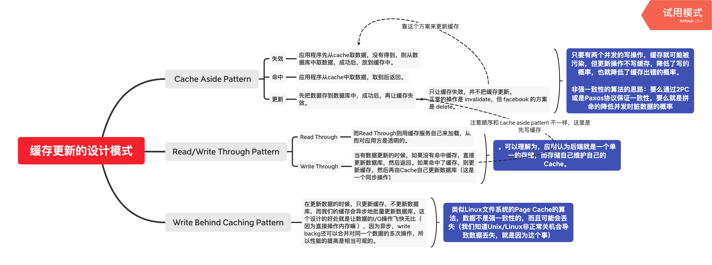

<!DOCTYPE html>
<html>
<head><meta name="generator" content="Hexo 3.9.0">
  <meta charset="utf-8">
  
  <title>缓存的套路 | 守株阁</title>
  <meta name="viewport" content="width=device-width, initial-scale=1, maximum-scale=1">
  <meta name="description" content="什么时候应该使用缓存？所有高耗时，需要吞吐量，而不太严格依赖强一致性的场景-不管是计算密集型还是 io 密集型，都可以使用缓存加速。 多级缓存问题大多数情况下不要使用多级缓存。多级缓存要严格设计差异化的冷热数据分离策略，还要考虑分布式的缓存失效+更新的问题，很复杂。 勉强可用的多级缓存应该是远端一级缓存，近端二级缓存。 本地多级缓存非常容易出一致性问题-慎用 MyBatis 和 Hibernate">
<meta name="keywords" content="系统架构,缓存">
<meta property="og:type" content="article">
<meta property="og:title" content="缓存的套路">
<meta property="og:url" content="http://yoursite.com/2020/03/23/缓存的套路/index.html">
<meta property="og:site_name" content="守株阁">
<meta property="og:description" content="什么时候应该使用缓存？所有高耗时，需要吞吐量，而不太严格依赖强一致性的场景-不管是计算密集型还是 io 密集型，都可以使用缓存加速。 多级缓存问题大多数情况下不要使用多级缓存。多级缓存要严格设计差异化的冷热数据分离策略，还要考虑分布式的缓存失效+更新的问题，很复杂。 勉强可用的多级缓存应该是远端一级缓存，近端二级缓存。 本地多级缓存非常容易出一致性问题-慎用 MyBatis 和 Hibernate">
<meta property="og:locale" content="zh-Hans">
<meta property="og:image" content="http://yoursite.com/2020/03/23/缓存的套路/缓存更新的设计模式.png">
<meta property="og:updated_time" content="2020-12-22T03:57:22.278Z">
<meta name="twitter:card" content="summary">
<meta name="twitter:title" content="缓存的套路">
<meta name="twitter:description" content="什么时候应该使用缓存？所有高耗时，需要吞吐量，而不太严格依赖强一致性的场景-不管是计算密集型还是 io 密集型，都可以使用缓存加速。 多级缓存问题大多数情况下不要使用多级缓存。多级缓存要严格设计差异化的冷热数据分离策略，还要考虑分布式的缓存失效+更新的问题，很复杂。 勉强可用的多级缓存应该是远端一级缓存，近端二级缓存。 本地多级缓存非常容易出一致性问题-慎用 MyBatis 和 Hibernate">
<meta name="twitter:image" content="http://yoursite.com/2020/03/23/缓存的套路/缓存更新的设计模式.png">
  
    <link rel="alternate" href="/atom.xml" title="守株阁" type="application/atom+xml">
  
  
    <link rel="icon" href="/favicon.png">
  
  
  <link rel="stylesheet" href="/css/style.css">
  

<link rel="stylesheet" href="/css/prism.css" type="text/css">
<link rel="stylesheet" href="/css/prism-line-numbers.css" type="text/css"></head>
</html>
<body>
  <div id="container">
    <div id="wrap">
      <header id="header">
  <div id="banner"></div>
  <div id="header-outer" class="outer">
    
    <div id="header-inner" class="inner">
      <nav id="sub-nav">
        
          <a id="nav-rss-link" class="nav-icon" href="/atom.xml" title="RSS Feed"></a>
        
        <a id="nav-search-btn" class="nav-icon" title="搜索"></a>
      </nav>
      <div id="search-form-wrap">
        <form action="//google.com/search" method="get" accept-charset="UTF-8" class="search-form"><input type="search" name="q" class="search-form-input" placeholder="Search"><button type="submit" class="search-form-submit">&#xF002;</button><input type="hidden" name="sitesearch" value="http://yoursite.com"></form>
      </div>
      <nav id="main-nav">
        <a id="main-nav-toggle" class="nav-icon"></a>
        
          <a class="main-nav-link" href="/">首页</a>
        
          <a class="main-nav-link" href="/archives">归档</a>
        
          <a class="main-nav-link" href="/about">关于</a>
        
      </nav>
      
    </div>
    <div id="header-title" class="inner">
      <h1 id="logo-wrap">
        <a href="/" id="logo">守株阁</a>
      </h1>
      
        <h2 id="subtitle-wrap">
          <a href="/" id="subtitle">一切都是守株待兔，如切如磋，如琢如磨。I am just joking.</a>
        </h2>
      
    </div>
  </div>
</header>
      <div class="outer">
        <section id="main"><article id="post-缓存的套路" class="article article-type-post" itemscope itemprop="blogPost">
  <div class="article-meta">
    <a href="/2020/03/23/缓存的套路/" class="article-date">
  <time datetime="2020-03-23T06:17:03.000Z" itemprop="datePublished">2020-03-23</time>
</a>
    
  </div>
  <div class="article-inner">
    
    
      <header class="article-header">
        
  
    <h1 class="article-title" itemprop="name">
      缓存的套路
    </h1>
  

      </header>
    
    <div class="article-entry" itemprop="articleBody">
      
        <!-- Table of Contents -->
        
        <h1 id="什么时候应该使用缓存？"><a href="#什么时候应该使用缓存？" class="headerlink" title="什么时候应该使用缓存？"></a>什么时候应该使用缓存？</h1><p>所有高耗时，需要吞吐量，而不太严格依赖强一致性的场景-不管是计算密集型还是 io 密集型，都可以使用缓存加速。</p>
<h1 id="多级缓存问题"><a href="#多级缓存问题" class="headerlink" title="多级缓存问题"></a>多级缓存问题</h1><p>大多数情况下不要使用多级缓存。<br>多级缓存要严格设计差异化的冷热数据分离策略，还要考虑分布式的缓存失效+更新的问题，很复杂。</p>
<p>勉强可用的多级缓存应该是远端一级缓存，近端二级缓存。</p>
<p>本地多级缓存非常容易出一致性问题-慎用 MyBatis 和 Hibernate 的二级缓存。</p>
<h1 id="外部缓存设计思路"><a href="#外部缓存设计思路" class="headerlink" title="外部缓存设计思路"></a>外部缓存设计思路</h1><p>外部缓存通常指的是分布式缓存组件或者中间件。</p>
<p>内文直接参考<a href="https://coolshell.cn/articles/17416.html" target="_blank" rel="noopener">《缓存更新的套路》</a></p>
<p><a href="缓存更新的设计模式.xmind">缓存更新的设计模式.xmind</a><br></p>
<h2 id="Redis"><a href="#Redis" class="headerlink" title="Redis"></a>Redis</h2><h1 id="内部缓存的用法"><a href="#内部缓存的用法" class="headerlink" title="内部缓存的用法"></a>内部缓存的用法</h1><p>内部缓存通常指的是进程内缓存，in-memory-cache。</p>
<p>Spring Cache 依靠一个 CacheManager SPI 机制，来跟不同的 cache 实现打交道。大多数时候我们应该用 CacheManager 封装好的 wrapper api 来跟缓存打交道，极少数情况下我们应该 getNativeCache 来使用专有 API。</p>
<ol>
<li>Guava Cache 就是给 ConcurrentHashMap 加上了大量的 LRU 等 evict 操作和相应的管理策略。Guava在每次访问缓存的时候判断cache数据是否过期，如果过期，这时才将其删除，并没有另起一个线程专门来删除过期数据-类似 WeakHashMap。内部维护了2个队列 AccessQueue 和 WriteQueue 来记录缓存中数据访问和写入的顺序。访问缓存时，先用key计算出hash，从而找出所在的segment，然后再在segment中寻找具体问题，类似于使用ConcurrentHashMap数据结构来存放缓存数据。</li>
<li>Guava在每次访问缓存的时候判断cache数据是否过期，如果过期，这时才将其删除，并没有另起一个线程专门来删除过期数据。</li>
<li>ECache 支持本地磁盘缓存，甚至支持集群模式-使用到集群的时候，是不是可以考虑改用 Redis 更好。</li>
<li>Ecache 有内存占用大小统计，Guava Cache 没有。</li>
<li>Ecache 提供全面的缓存支持，Guava Cache 提供基本的缓存支持。</li>
<li>Ecache 允许 value 为 null；而 Guava Cache 允许 value 为 null，因为它根据value的值是否为null来判断是否需要load，所以不允许返回为null。这就意味着 Guava Cache 不易处理缓存穿透的问题，需要使用使用空对象替换 null。</li>
<li>Caffeine 是用 Java8 对 Guava Cache 的一种重写。</li>
<li>在更多的时候，一个简单的全局的 ConcurrentHashMap（注意，它作为全局可访问的状态，天然就应该做线程安全设计）就可以解决大部分缓存问题。只有加上各种细致的操作的时候，才有必要专门引入特定的缓存包。Guava Cache 实际上是由一个开源的 <a href="https://github.com/ben-manes/concurrentlinkedhashmap" target="_blank" rel="noopener">one-man project concurrentlinkedhashmap</a> 衍生出来，交给一个 dedicated team 维护的。</li>
</ol>
<h2 id="Guava"><a href="#Guava" class="headerlink" title="Guava"></a>Guava</h2><p>spring 的 cache 用的是 cachemanager。<br>guava 的 cache 用的是 cachebuilder。</p>
<h3 id="Spring-Guava-一般的短路器式的用法"><a href="#Spring-Guava-一般的短路器式的用法" class="headerlink" title="Spring + Guava 一般的短路器式的用法"></a>Spring + Guava 一般的短路器式的用法</h3><pre class="line-numbers language-java"><code class="language-java"><span class="token annotation punctuation">@Configuration</span>
<span class="token annotation punctuation">@ComponentScan</span><span class="token punctuation">(</span><span class="token string">"com.concretepage"</span><span class="token punctuation">)</span>
<span class="token annotation punctuation">@EnableCaching</span>
<span class="token keyword">public</span> <span class="token keyword">class</span> <span class="token class-name">AppConfigA</span>  <span class="token punctuation">{</span>
    <span class="token annotation punctuation">@Bean</span>
    <span class="token keyword">public</span> CacheManager <span class="token function">cacheManager</span><span class="token punctuation">(</span><span class="token punctuation">)</span> <span class="token punctuation">{</span>
       GuavaCacheManager cacheManager <span class="token operator">=</span> <span class="token keyword">new</span> <span class="token class-name">GuavaCacheManager</span><span class="token punctuation">(</span><span class="token string">"mycache"</span><span class="token punctuation">)</span><span class="token punctuation">;</span>
       CacheBuilder<span class="token operator">&lt;</span>Object<span class="token punctuation">,</span> Object<span class="token operator">></span> cacheBuilder <span class="token operator">=</span> CacheBuilder<span class="token punctuation">.</span><span class="token function">newBuilder</span><span class="token punctuation">(</span><span class="token punctuation">)</span>
       <span class="token punctuation">.</span><span class="token function">maximumSize</span><span class="token punctuation">(</span><span class="token number">100</span><span class="token punctuation">)</span>
       <span class="token punctuation">.</span><span class="token function">expireAfterWrite</span><span class="token punctuation">(</span><span class="token number">10</span><span class="token punctuation">,</span> TimeUnit<span class="token punctuation">.</span>MINUTES<span class="token punctuation">)</span><span class="token punctuation">;</span>
       cacheManager<span class="token punctuation">.</span><span class="token function">setCacheBuilder</span><span class="token punctuation">(</span>cacheBuilder<span class="token punctuation">)</span><span class="token punctuation">;</span>
       <span class="token keyword">return</span> cacheManager<span class="token punctuation">;</span>
    <span class="token punctuation">}</span>
<span class="token punctuation">}</span>

<span class="token annotation punctuation">@Configuration</span>
<span class="token annotation punctuation">@ComponentScan</span><span class="token punctuation">(</span><span class="token string">"com.concretepage"</span><span class="token punctuation">)</span>
<span class="token annotation punctuation">@EnableCaching</span>
<span class="token keyword">public</span> <span class="token keyword">class</span> <span class="token class-name">AppConfigB</span>  <span class="token punctuation">{</span>
    <span class="token annotation punctuation">@Bean</span>
    <span class="token keyword">public</span> CacheManager <span class="token function">cacheManager</span><span class="token punctuation">(</span><span class="token punctuation">)</span> <span class="token punctuation">{</span>
       SimpleCacheManager cacheManager <span class="token operator">=</span> <span class="token keyword">new</span> <span class="token class-name">SimpleCacheManager</span><span class="token punctuation">(</span><span class="token punctuation">)</span><span class="token punctuation">;</span>
       GuavaCache guavaCache1 <span class="token operator">=</span> <span class="token keyword">new</span> <span class="token class-name">GuavaCache</span><span class="token punctuation">(</span><span class="token string">"book"</span><span class="token punctuation">,</span> CacheBuilder<span class="token punctuation">.</span><span class="token function">newBuilder</span><span class="token punctuation">(</span><span class="token punctuation">)</span>
               <span class="token punctuation">.</span><span class="token function">maximumSize</span><span class="token punctuation">(</span><span class="token number">50</span><span class="token punctuation">)</span><span class="token punctuation">.</span><span class="token function">build</span><span class="token punctuation">(</span><span class="token punctuation">)</span><span class="token punctuation">)</span><span class="token punctuation">;</span>
       GuavaCache guavaCache2 <span class="token operator">=</span> <span class="token keyword">new</span> <span class="token class-name">GuavaCache</span><span class="token punctuation">(</span><span class="token string">"bookstore"</span><span class="token punctuation">,</span> CacheBuilder<span class="token punctuation">.</span><span class="token function">newBuilder</span><span class="token punctuation">(</span><span class="token punctuation">)</span>
               <span class="token punctuation">.</span><span class="token function">maximumSize</span><span class="token punctuation">(</span><span class="token number">100</span><span class="token punctuation">)</span><span class="token punctuation">.</span><span class="token function">expireAfterAccess</span><span class="token punctuation">(</span><span class="token number">5</span><span class="token punctuation">,</span> TimeUnit<span class="token punctuation">.</span>MINUTES<span class="token punctuation">)</span><span class="token punctuation">.</span><span class="token function">build</span><span class="token punctuation">(</span><span class="token punctuation">)</span><span class="token punctuation">)</span><span class="token punctuation">;</span>
       cacheManager<span class="token punctuation">.</span><span class="token function">setCaches</span><span class="token punctuation">(</span>Arrays<span class="token punctuation">.</span><span class="token function">asList</span><span class="token punctuation">(</span>guavaCache1<span class="token punctuation">,</span> guavaCache2<span class="token punctuation">)</span><span class="token punctuation">)</span><span class="token punctuation">;</span>
       <span class="token keyword">return</span> cacheManager<span class="token punctuation">;</span>
    <span class="token punctuation">}</span>
<span class="token punctuation">}</span> 

<span class="token annotation punctuation">@Service</span>
<span class="token keyword">public</span> <span class="token keyword">class</span> <span class="token class-name">BookAppA</span> <span class="token punctuation">{</span>
    Book book <span class="token operator">=</span> <span class="token keyword">new</span> <span class="token class-name">Book</span><span class="token punctuation">(</span><span class="token punctuation">)</span><span class="token punctuation">;</span>
    <span class="token annotation punctuation">@Cacheable</span><span class="token punctuation">(</span>value <span class="token operator">=</span> <span class="token string">"mycache"</span><span class="token punctuation">)</span>
    <span class="token keyword">public</span> Book <span class="token function">getBook</span><span class="token punctuation">(</span><span class="token punctuation">)</span> <span class="token punctuation">{</span>
        System<span class="token punctuation">.</span>out<span class="token punctuation">.</span><span class="token function">println</span><span class="token punctuation">(</span><span class="token string">"Executing getBook method..."</span><span class="token punctuation">)</span><span class="token punctuation">;</span>
        book<span class="token punctuation">.</span><span class="token function">setBookName</span><span class="token punctuation">(</span><span class="token string">"Mahabharat"</span><span class="token punctuation">)</span><span class="token punctuation">;</span>
        <span class="token keyword">return</span> book<span class="token punctuation">;</span>
    <span class="token punctuation">}</span>
<span class="token punctuation">}</span> 
<span aria-hidden="true" class="line-numbers-rows"><span></span><span></span><span></span><span></span><span></span><span></span><span></span><span></span><span></span><span></span><span></span><span></span><span></span><span></span><span></span><span></span><span></span><span></span><span></span><span></span><span></span><span></span><span></span><span></span><span></span><span></span><span></span><span></span><span></span><span></span><span></span><span></span><span></span><span></span><span></span><span></span><span></span><span></span><span></span><span></span><span></span></span></code></pre>
<h3 id="只需要覆盖-load-方法"><a href="#只需要覆盖-load-方法" class="headerlink" title="只需要覆盖 load 方法"></a>只需要覆盖 load 方法</h3><p>load 和 evict 逻辑是解耦的。</p>
<pre class="line-numbers language-java"><code class="language-java"><span class="token annotation punctuation">@Test</span>
<span class="token keyword">public</span> <span class="token keyword">void</span> <span class="token function">whenCacheMiss_thenValueIsComputed</span><span class="token punctuation">(</span><span class="token punctuation">)</span> <span class="token punctuation">{</span>
    CacheLoader<span class="token operator">&lt;</span>String<span class="token punctuation">,</span> String<span class="token operator">></span> loader<span class="token punctuation">;</span>
    loader <span class="token operator">=</span> <span class="token keyword">new</span> <span class="token class-name">CacheLoader</span><span class="token operator">&lt;</span>String<span class="token punctuation">,</span> String<span class="token operator">></span><span class="token punctuation">(</span><span class="token punctuation">)</span> <span class="token punctuation">{</span>
        <span class="token annotation punctuation">@Override</span>
        <span class="token keyword">public</span> String <span class="token function">load</span><span class="token punctuation">(</span>String key<span class="token punctuation">)</span> <span class="token punctuation">{</span>
            <span class="token keyword">return</span> key<span class="token punctuation">.</span><span class="token function">toUpperCase</span><span class="token punctuation">(</span><span class="token punctuation">)</span><span class="token punctuation">;</span>
        <span class="token punctuation">}</span>
    <span class="token punctuation">}</span><span class="token punctuation">;</span>

    LoadingCache<span class="token operator">&lt;</span>String<span class="token punctuation">,</span> String<span class="token operator">></span> cache<span class="token punctuation">;</span>
    cache <span class="token operator">=</span> CacheBuilder<span class="token punctuation">.</span><span class="token function">newBuilder</span><span class="token punctuation">(</span><span class="token punctuation">)</span><span class="token punctuation">.</span><span class="token function">build</span><span class="token punctuation">(</span>loader<span class="token punctuation">)</span><span class="token punctuation">;</span>

    <span class="token function">assertEquals</span><span class="token punctuation">(</span><span class="token number">0</span><span class="token punctuation">,</span> cache<span class="token punctuation">.</span><span class="token function">size</span><span class="token punctuation">(</span><span class="token punctuation">)</span><span class="token punctuation">)</span><span class="token punctuation">;</span>
    <span class="token function">assertEquals</span><span class="token punctuation">(</span><span class="token string">"HELLO"</span><span class="token punctuation">,</span> cache<span class="token punctuation">.</span><span class="token function">getUnchecked</span><span class="token punctuation">(</span><span class="token string">"hello"</span><span class="token punctuation">)</span><span class="token punctuation">)</span><span class="token punctuation">;</span>
    <span class="token function">assertEquals</span><span class="token punctuation">(</span><span class="token number">1</span><span class="token punctuation">,</span> cache<span class="token punctuation">.</span><span class="token function">size</span><span class="token punctuation">(</span><span class="token punctuation">)</span><span class="token punctuation">)</span><span class="token punctuation">;</span>
<span class="token punctuation">}</span>

<span class="token comment" spellcheck="true">// load 的用法，下次不会再计算 createExpensiveGraph 了。</span>
CacheLoader<span class="token operator">&lt;</span>Key<span class="token punctuation">,</span> Graph<span class="token operator">></span> loader <span class="token operator">=</span> <span class="token keyword">new</span> <span class="token class-name">CacheLoader</span><span class="token operator">&lt;</span>Key<span class="token punctuation">,</span> Graph<span class="token operator">></span><span class="token punctuation">(</span><span class="token punctuation">)</span> <span class="token punctuation">{</span>
      <span class="token keyword">public</span> Graph <span class="token function">load</span><span class="token punctuation">(</span>Key key<span class="token punctuation">)</span> <span class="token keyword">throws</span> AnyException <span class="token punctuation">{</span>
        <span class="token keyword">return</span> <span class="token function">createExpensiveGraph</span><span class="token punctuation">(</span>key<span class="token punctuation">)</span><span class="token punctuation">;</span>
      <span class="token punctuation">}</span>
<span class="token punctuation">}</span><span class="token punctuation">;</span>
LoadingCache<span class="token operator">&lt;</span>Key<span class="token punctuation">,</span> Graph<span class="token operator">></span> cache <span class="token operator">=</span> CacheBuilder<span class="token punctuation">.</span><span class="token function">newBuilder</span><span class="token punctuation">(</span><span class="token punctuation">)</span><span class="token punctuation">.</span><span class="token function">build</span><span class="token punctuation">(</span>loader<span class="token punctuation">)</span><span class="token punctuation">;</span><span class="token punctuation">}</span>
<span aria-hidden="true" class="line-numbers-rows"><span></span><span></span><span></span><span></span><span></span><span></span><span></span><span></span><span></span><span></span><span></span><span></span><span></span><span></span><span></span><span></span><span></span><span></span><span></span><span></span><span></span><span></span><span></span><span></span><span></span></span></code></pre>
<h3 id="带权重的缓存配置"><a href="#带权重的缓存配置" class="headerlink" title="带权重的缓存配置"></a>带权重的缓存配置</h3><pre class="line-numbers language-java"><code class="language-java"><span class="token annotation punctuation">@Test</span>
<span class="token keyword">public</span> <span class="token keyword">void</span> <span class="token function">whenCacheReachMaxWeight_thenEviction</span><span class="token punctuation">(</span><span class="token punctuation">)</span> <span class="token punctuation">{</span>
    CacheLoader<span class="token operator">&lt;</span>String<span class="token punctuation">,</span> String<span class="token operator">></span> loader<span class="token punctuation">;</span>
    loader <span class="token operator">=</span> <span class="token keyword">new</span> <span class="token class-name">CacheLoader</span><span class="token operator">&lt;</span>String<span class="token punctuation">,</span> String<span class="token operator">></span><span class="token punctuation">(</span><span class="token punctuation">)</span> <span class="token punctuation">{</span>
        <span class="token annotation punctuation">@Override</span>
        <span class="token keyword">public</span> String <span class="token function">load</span><span class="token punctuation">(</span>String key<span class="token punctuation">)</span> <span class="token punctuation">{</span>
            <span class="token keyword">return</span> key<span class="token punctuation">.</span><span class="token function">toUpperCase</span><span class="token punctuation">(</span><span class="token punctuation">)</span><span class="token punctuation">;</span>
        <span class="token punctuation">}</span>
    <span class="token punctuation">}</span><span class="token punctuation">;</span>

    Weigher<span class="token operator">&lt;</span>String<span class="token punctuation">,</span> String<span class="token operator">></span> weighByLength<span class="token punctuation">;</span>
    weighByLength <span class="token operator">=</span> <span class="token keyword">new</span> <span class="token class-name">Weigher</span><span class="token operator">&lt;</span>String<span class="token punctuation">,</span> String<span class="token operator">></span><span class="token punctuation">(</span><span class="token punctuation">)</span> <span class="token punctuation">{</span>
        <span class="token annotation punctuation">@Override</span>
        <span class="token keyword">public</span> <span class="token keyword">int</span> <span class="token function">weigh</span><span class="token punctuation">(</span>String key<span class="token punctuation">,</span> String value<span class="token punctuation">)</span> <span class="token punctuation">{</span>
            <span class="token keyword">return</span> value<span class="token punctuation">.</span><span class="token function">length</span><span class="token punctuation">(</span><span class="token punctuation">)</span><span class="token punctuation">;</span>
        <span class="token punctuation">}</span>
    <span class="token punctuation">}</span><span class="token punctuation">;</span>

    LoadingCache<span class="token operator">&lt;</span>String<span class="token punctuation">,</span> String<span class="token operator">></span> cache<span class="token punctuation">;</span>
    cache <span class="token operator">=</span> CacheBuilder<span class="token punctuation">.</span><span class="token function">newBuilder</span><span class="token punctuation">(</span><span class="token punctuation">)</span>
      <span class="token punctuation">.</span><span class="token function">maximumWeight</span><span class="token punctuation">(</span><span class="token number">16</span><span class="token punctuation">)</span>
      <span class="token punctuation">.</span><span class="token function">weigher</span><span class="token punctuation">(</span>weighByLength<span class="token punctuation">)</span>
      <span class="token punctuation">.</span><span class="token function">build</span><span class="token punctuation">(</span>loader<span class="token punctuation">)</span><span class="token punctuation">;</span>

    cache<span class="token punctuation">.</span><span class="token function">getUnchecked</span><span class="token punctuation">(</span><span class="token string">"first"</span><span class="token punctuation">)</span><span class="token punctuation">;</span>
    cache<span class="token punctuation">.</span><span class="token function">getUnchecked</span><span class="token punctuation">(</span><span class="token string">"second"</span><span class="token punctuation">)</span><span class="token punctuation">;</span>
    cache<span class="token punctuation">.</span><span class="token function">getUnchecked</span><span class="token punctuation">(</span><span class="token string">"third"</span><span class="token punctuation">)</span><span class="token punctuation">;</span>
    cache<span class="token punctuation">.</span><span class="token function">getUnchecked</span><span class="token punctuation">(</span><span class="token string">"last"</span><span class="token punctuation">)</span><span class="token punctuation">;</span>
    <span class="token function">assertEquals</span><span class="token punctuation">(</span><span class="token number">3</span><span class="token punctuation">,</span> cache<span class="token punctuation">.</span><span class="token function">size</span><span class="token punctuation">(</span><span class="token punctuation">)</span><span class="token punctuation">)</span><span class="token punctuation">;</span>
    <span class="token function">assertNull</span><span class="token punctuation">(</span>cache<span class="token punctuation">.</span><span class="token function">getIfPresent</span><span class="token punctuation">(</span><span class="token string">"first"</span><span class="token punctuation">)</span><span class="token punctuation">)</span><span class="token punctuation">;</span>
    <span class="token function">assertEquals</span><span class="token punctuation">(</span><span class="token string">"LAST"</span><span class="token punctuation">,</span> cache<span class="token punctuation">.</span><span class="token function">getIfPresent</span><span class="token punctuation">(</span><span class="token string">"last"</span><span class="token punctuation">)</span><span class="token punctuation">)</span><span class="token punctuation">;</span>
<span aria-hidden="true" class="line-numbers-rows"><span></span><span></span><span></span><span></span><span></span><span></span><span></span><span></span><span></span><span></span><span></span><span></span><span></span><span></span><span></span><span></span><span></span><span></span><span></span><span></span><span></span><span></span><span></span><span></span><span></span><span></span><span></span><span></span><span></span><span></span><span></span></span></code></pre>
<h3 id="指定过期时间"><a href="#指定过期时间" class="headerlink" title="指定过期时间"></a>指定过期时间</h3><pre class="line-numbers language-java"><code class="language-java">
<span class="token annotation punctuation">@Test</span>
<span class="token keyword">public</span> <span class="token keyword">void</span> <span class="token function">whenEntryIdle_thenEviction</span><span class="token punctuation">(</span><span class="token punctuation">)</span>
  <span class="token keyword">throws</span> InterruptedException <span class="token punctuation">{</span>
    CacheLoader<span class="token operator">&lt;</span>String<span class="token punctuation">,</span> String<span class="token operator">></span> loader<span class="token punctuation">;</span>
    loader <span class="token operator">=</span> <span class="token keyword">new</span> <span class="token class-name">CacheLoader</span><span class="token operator">&lt;</span>String<span class="token punctuation">,</span> String<span class="token operator">></span><span class="token punctuation">(</span><span class="token punctuation">)</span> <span class="token punctuation">{</span>
        <span class="token annotation punctuation">@Override</span>
        <span class="token keyword">public</span> String <span class="token function">load</span><span class="token punctuation">(</span>String key<span class="token punctuation">)</span> <span class="token punctuation">{</span>
            <span class="token keyword">return</span> key<span class="token punctuation">.</span><span class="token function">toUpperCase</span><span class="token punctuation">(</span><span class="token punctuation">)</span><span class="token punctuation">;</span>
        <span class="token punctuation">}</span>
    <span class="token punctuation">}</span><span class="token punctuation">;</span>

    LoadingCache<span class="token operator">&lt;</span>String<span class="token punctuation">,</span> String<span class="token operator">></span> cache<span class="token punctuation">;</span>
    cache <span class="token operator">=</span> CacheBuilder<span class="token punctuation">.</span><span class="token function">newBuilder</span><span class="token punctuation">(</span><span class="token punctuation">)</span>
        <span class="token comment" spellcheck="true">// remove records that have been idle for 2ms:</span>
      <span class="token punctuation">.</span><span class="token function">expireAfterAccess</span><span class="token punctuation">(</span><span class="token number">2</span><span class="token punctuation">,</span>TimeUnit<span class="token punctuation">.</span>MILLISECONDS<span class="token punctuation">)</span>
      <span class="token punctuation">.</span><span class="token function">build</span><span class="token punctuation">(</span>loader<span class="token punctuation">)</span><span class="token punctuation">;</span>

    cache<span class="token punctuation">.</span><span class="token function">getUnchecked</span><span class="token punctuation">(</span><span class="token string">"hello"</span><span class="token punctuation">)</span><span class="token punctuation">;</span>
    <span class="token function">assertEquals</span><span class="token punctuation">(</span><span class="token number">1</span><span class="token punctuation">,</span> cache<span class="token punctuation">.</span><span class="token function">size</span><span class="token punctuation">(</span><span class="token punctuation">)</span><span class="token punctuation">)</span><span class="token punctuation">;</span>

    cache<span class="token punctuation">.</span><span class="token function">getUnchecked</span><span class="token punctuation">(</span><span class="token string">"hello"</span><span class="token punctuation">)</span><span class="token punctuation">;</span>
    Thread<span class="token punctuation">.</span><span class="token function">sleep</span><span class="token punctuation">(</span><span class="token number">300</span><span class="token punctuation">)</span><span class="token punctuation">;</span>

    cache<span class="token punctuation">.</span><span class="token function">getUnchecked</span><span class="token punctuation">(</span><span class="token string">"test"</span><span class="token punctuation">)</span><span class="token punctuation">;</span>
    <span class="token function">assertEquals</span><span class="token punctuation">(</span><span class="token number">1</span><span class="token punctuation">,</span> cache<span class="token punctuation">.</span><span class="token function">size</span><span class="token punctuation">(</span><span class="token punctuation">)</span><span class="token punctuation">)</span><span class="token punctuation">;</span>
    <span class="token function">assertNull</span><span class="token punctuation">(</span>cache<span class="token punctuation">.</span><span class="token function">getIfPresent</span><span class="token punctuation">(</span><span class="token string">"hello"</span><span class="token punctuation">)</span><span class="token punctuation">)</span><span class="token punctuation">;</span>
<span class="token punctuation">}</span>

<span class="token annotation punctuation">@Test</span>
<span class="token keyword">public</span> <span class="token keyword">void</span> <span class="token function">whenEntryLiveTimeExpire_thenEviction</span><span class="token punctuation">(</span><span class="token punctuation">)</span>
  <span class="token keyword">throws</span> InterruptedException <span class="token punctuation">{</span>
    CacheLoader<span class="token operator">&lt;</span>String<span class="token punctuation">,</span> String<span class="token operator">></span> loader<span class="token punctuation">;</span>
    loader <span class="token operator">=</span> <span class="token keyword">new</span> <span class="token class-name">CacheLoader</span><span class="token operator">&lt;</span>String<span class="token punctuation">,</span> String<span class="token operator">></span><span class="token punctuation">(</span><span class="token punctuation">)</span> <span class="token punctuation">{</span>
        <span class="token annotation punctuation">@Override</span>
        <span class="token keyword">public</span> String <span class="token function">load</span><span class="token punctuation">(</span>String key<span class="token punctuation">)</span> <span class="token punctuation">{</span>
            <span class="token keyword">return</span> key<span class="token punctuation">.</span><span class="token function">toUpperCase</span><span class="token punctuation">(</span><span class="token punctuation">)</span><span class="token punctuation">;</span>
        <span class="token punctuation">}</span>
    <span class="token punctuation">}</span><span class="token punctuation">;</span>

    LoadingCache<span class="token operator">&lt;</span>String<span class="token punctuation">,</span> String<span class="token operator">></span> cache<span class="token punctuation">;</span>
    cache <span class="token operator">=</span> CacheBuilder<span class="token punctuation">.</span><span class="token function">newBuilder</span><span class="token punctuation">(</span><span class="token punctuation">)</span>
    <span class="token comment" spellcheck="true">// 这个策略更保守</span>
    <span class="token comment" spellcheck="true">// evict records based on their total live time</span>
      <span class="token punctuation">.</span><span class="token function">expireAfterWrite</span><span class="token punctuation">(</span><span class="token number">2</span><span class="token punctuation">,</span>TimeUnit<span class="token punctuation">.</span>MILLISECONDS<span class="token punctuation">)</span>
      <span class="token punctuation">.</span><span class="token function">build</span><span class="token punctuation">(</span>loader<span class="token punctuation">)</span><span class="token punctuation">;</span>

    cache<span class="token punctuation">.</span><span class="token function">getUnchecked</span><span class="token punctuation">(</span><span class="token string">"hello"</span><span class="token punctuation">)</span><span class="token punctuation">;</span>
    <span class="token function">assertEquals</span><span class="token punctuation">(</span><span class="token number">1</span><span class="token punctuation">,</span> cache<span class="token punctuation">.</span><span class="token function">size</span><span class="token punctuation">(</span><span class="token punctuation">)</span><span class="token punctuation">)</span><span class="token punctuation">;</span>
    Thread<span class="token punctuation">.</span><span class="token function">sleep</span><span class="token punctuation">(</span><span class="token number">300</span><span class="token punctuation">)</span><span class="token punctuation">;</span>
    cache<span class="token punctuation">.</span><span class="token function">getUnchecked</span><span class="token punctuation">(</span><span class="token string">"test"</span><span class="token punctuation">)</span><span class="token punctuation">;</span>
    <span class="token function">assertEquals</span><span class="token punctuation">(</span><span class="token number">1</span><span class="token punctuation">,</span> cache<span class="token punctuation">.</span><span class="token function">size</span><span class="token punctuation">(</span><span class="token punctuation">)</span><span class="token punctuation">)</span><span class="token punctuation">;</span>
    <span class="token function">assertNull</span><span class="token punctuation">(</span>cache<span class="token punctuation">.</span><span class="token function">getIfPresent</span><span class="token punctuation">(</span><span class="token string">"hello"</span><span class="token punctuation">)</span><span class="token punctuation">)</span><span class="token punctuation">;</span>
<span class="token punctuation">}</span>
<span aria-hidden="true" class="line-numbers-rows"><span></span><span></span><span></span><span></span><span></span><span></span><span></span><span></span><span></span><span></span><span></span><span></span><span></span><span></span><span></span><span></span><span></span><span></span><span></span><span></span><span></span><span></span><span></span><span></span><span></span><span></span><span></span><span></span><span></span><span></span><span></span><span></span><span></span><span></span><span></span><span></span><span></span><span></span><span></span><span></span><span></span><span></span><span></span><span></span><span></span><span></span><span></span><span></span><span></span><span></span><span></span><span></span><span></span><span></span></span></code></pre>
<h3 id="弱引用和软引用-key"><a href="#弱引用和软引用-key" class="headerlink" title="弱引用和软引用 key"></a>弱引用和软引用 key</h3><pre class="line-numbers language-java"><code class="language-java"><span class="token annotation punctuation">@Test</span>
<span class="token keyword">public</span> <span class="token keyword">void</span> <span class="token function">whenWeakKeyHasNoRef_thenRemoveFromCache</span><span class="token punctuation">(</span><span class="token punctuation">)</span> <span class="token punctuation">{</span>
    CacheLoader<span class="token operator">&lt;</span>String<span class="token punctuation">,</span> String<span class="token operator">></span> loader<span class="token punctuation">;</span>
    loader <span class="token operator">=</span> <span class="token keyword">new</span> <span class="token class-name">CacheLoader</span><span class="token operator">&lt;</span>String<span class="token punctuation">,</span> String<span class="token operator">></span><span class="token punctuation">(</span><span class="token punctuation">)</span> <span class="token punctuation">{</span>
        <span class="token annotation punctuation">@Override</span>
        <span class="token keyword">public</span> String <span class="token function">load</span><span class="token punctuation">(</span>String key<span class="token punctuation">)</span> <span class="token punctuation">{</span>
            <span class="token keyword">return</span> key<span class="token punctuation">.</span><span class="token function">toUpperCase</span><span class="token punctuation">(</span><span class="token punctuation">)</span><span class="token punctuation">;</span>
        <span class="token punctuation">}</span>
    <span class="token punctuation">}</span><span class="token punctuation">;</span>

    LoadingCache<span class="token operator">&lt;</span>String<span class="token punctuation">,</span> String<span class="token operator">></span> cache<span class="token punctuation">;</span>
    cache <span class="token operator">=</span> CacheBuilder<span class="token punctuation">.</span><span class="token function">newBuilder</span><span class="token punctuation">(</span><span class="token punctuation">)</span><span class="token punctuation">.</span><span class="token function">weakKeys</span><span class="token punctuation">(</span><span class="token punctuation">)</span><span class="token punctuation">.</span><span class="token function">build</span><span class="token punctuation">(</span>loader<span class="token punctuation">)</span><span class="token punctuation">;</span>
<span class="token punctuation">}</span>

<span class="token annotation punctuation">@Test</span>
<span class="token keyword">public</span> <span class="token keyword">void</span> <span class="token function">whenSoftValue_thenRemoveFromCache</span><span class="token punctuation">(</span><span class="token punctuation">)</span> <span class="token punctuation">{</span>
    CacheLoader<span class="token operator">&lt;</span>String<span class="token punctuation">,</span> String<span class="token operator">></span> loader<span class="token punctuation">;</span>
    loader <span class="token operator">=</span> <span class="token keyword">new</span> <span class="token class-name">CacheLoader</span><span class="token operator">&lt;</span>String<span class="token punctuation">,</span> String<span class="token operator">></span><span class="token punctuation">(</span><span class="token punctuation">)</span> <span class="token punctuation">{</span>
        <span class="token annotation punctuation">@Override</span>
        <span class="token keyword">public</span> String <span class="token function">load</span><span class="token punctuation">(</span>String key<span class="token punctuation">)</span> <span class="token punctuation">{</span>
            <span class="token keyword">return</span> key<span class="token punctuation">.</span><span class="token function">toUpperCase</span><span class="token punctuation">(</span><span class="token punctuation">)</span><span class="token punctuation">;</span>
        <span class="token punctuation">}</span>
    <span class="token punctuation">}</span><span class="token punctuation">;</span>

    LoadingCache<span class="token operator">&lt;</span>String<span class="token punctuation">,</span> String<span class="token operator">></span> cache<span class="token punctuation">;</span>
    cache <span class="token operator">=</span> CacheBuilder<span class="token punctuation">.</span><span class="token function">newBuilder</span><span class="token punctuation">(</span><span class="token punctuation">)</span><span class="token punctuation">.</span><span class="token function">softValues</span><span class="token punctuation">(</span><span class="token punctuation">)</span><span class="token punctuation">.</span><span class="token function">build</span><span class="token punctuation">(</span>loader<span class="token punctuation">)</span><span class="token punctuation">;</span>
<span class="token punctuation">}</span>
<span aria-hidden="true" class="line-numbers-rows"><span></span><span></span><span></span><span></span><span></span><span></span><span></span><span></span><span></span><span></span><span></span><span></span><span></span><span></span><span></span><span></span><span></span><span></span><span></span><span></span><span></span><span></span><span></span><span></span><span></span><span></span><span></span></span></code></pre>
<h3 id="定时触发-load-方法"><a href="#定时触发-load-方法" class="headerlink" title="定时触发 load 方法"></a>定时触发 load 方法</h3><pre class="line-numbers language-java"><code class="language-java"><span class="token annotation punctuation">@Test</span>
<span class="token keyword">public</span> <span class="token keyword">void</span> <span class="token function">whenLiveTimeEnd_thenRefresh</span><span class="token punctuation">(</span><span class="token punctuation">)</span> <span class="token punctuation">{</span>
    CacheLoader<span class="token operator">&lt;</span>String<span class="token punctuation">,</span> String<span class="token operator">></span> loader<span class="token punctuation">;</span>
    loader <span class="token operator">=</span> <span class="token keyword">new</span> <span class="token class-name">CacheLoader</span><span class="token operator">&lt;</span>String<span class="token punctuation">,</span> String<span class="token operator">></span><span class="token punctuation">(</span><span class="token punctuation">)</span> <span class="token punctuation">{</span>
        <span class="token annotation punctuation">@Override</span>
        <span class="token keyword">public</span> String <span class="token function">load</span><span class="token punctuation">(</span>String key<span class="token punctuation">)</span> <span class="token punctuation">{</span>
            <span class="token keyword">return</span> key<span class="token punctuation">.</span><span class="token function">toUpperCase</span><span class="token punctuation">(</span><span class="token punctuation">)</span><span class="token punctuation">;</span>
        <span class="token punctuation">}</span>
    <span class="token punctuation">}</span><span class="token punctuation">;</span>

    LoadingCache<span class="token operator">&lt;</span>String<span class="token punctuation">,</span> String<span class="token operator">></span> cache<span class="token punctuation">;</span>
    cache <span class="token operator">=</span> CacheBuilder<span class="token punctuation">.</span><span class="token function">newBuilder</span><span class="token punctuation">(</span><span class="token punctuation">)</span>
      <span class="token punctuation">.</span><span class="token function">refreshAfterWrite</span><span class="token punctuation">(</span><span class="token number">1</span><span class="token punctuation">,</span>TimeUnit<span class="token punctuation">.</span>MINUTES<span class="token punctuation">)</span>
      <span class="token punctuation">.</span><span class="token function">build</span><span class="token punctuation">(</span>loader<span class="token punctuation">)</span><span class="token punctuation">;</span>
<span class="token punctuation">}</span>
<span aria-hidden="true" class="line-numbers-rows"><span></span><span></span><span></span><span></span><span></span><span></span><span></span><span></span><span></span><span></span><span></span><span></span><span></span><span></span><span></span></span></code></pre>
<h3 id="主动预热"><a href="#主动预热" class="headerlink" title="主动预热"></a>主动预热</h3><pre><code>@Test
public void whenPreloadCache_thenUsePutAll() {
    CacheLoader&lt;String, String&gt; loader;
    loader = new CacheLoader&lt;String, String&gt;() {
        @Override
        public String load(String key) {
            return key.toUpperCase();
        }
    };

    LoadingCache&lt;String, String&gt; cache;
    cache = CacheBuilder.newBuilder().build(loader);

    Map&lt;String, String&gt; map = new HashMap&lt;String, String&gt;();
    map.put(&quot;first&quot;, &quot;FIRST&quot;);
    map.put(&quot;second&quot;, &quot;SECOND&quot;);
    cache.putAll(map);

    assertEquals(2, cache.size());
}
</code></pre><h3 id="必须使用-optional-来应对-null-值"><a href="#必须使用-optional-来应对-null-值" class="headerlink" title="必须使用 optional 来应对 null 值"></a>必须使用 optional 来应对 null 值</h3><pre><code>@Test
public void whenNullValue_thenOptional() {
    CacheLoader&lt;String, Optional&lt;String&gt;&gt; loader;
    loader = new CacheLoader&lt;String, Optional&lt;String&gt;&gt;() {
        @Override
        public Optional&lt;String&gt; load(String key) {
            return Optional.fromNullable(getSuffix(key));
        }
    };

    LoadingCache&lt;String, Optional&lt;String&gt;&gt; cache;
    cache = CacheBuilder.newBuilder().build(loader);

    assertEquals(&quot;txt&quot;, cache.getUnchecked(&quot;text.txt&quot;).get());
    assertFalse(cache.getUnchecked(&quot;hello&quot;).isPresent());
}
private String getSuffix(final String str) {
    int lastIndex = str.lastIndexOf(&#39;.&#39;);
    if (lastIndex == -1) {
        return null;
    }
    return str.substring(lastIndex + 1);
}
</code></pre><h3 id="订阅删除事件"><a href="#订阅删除事件" class="headerlink" title="订阅删除事件"></a>订阅删除事件</h3><pre class="line-numbers language-java"><code class="language-java"><span class="token annotation punctuation">@Test</span>
<span class="token keyword">public</span> <span class="token keyword">void</span> <span class="token function">whenEntryRemovedFromCache_thenNotify</span><span class="token punctuation">(</span><span class="token punctuation">)</span> <span class="token punctuation">{</span>
    CacheLoader<span class="token operator">&lt;</span>String<span class="token punctuation">,</span> String<span class="token operator">></span> loader<span class="token punctuation">;</span>
    loader <span class="token operator">=</span> <span class="token keyword">new</span> <span class="token class-name">CacheLoader</span><span class="token operator">&lt;</span>String<span class="token punctuation">,</span> String<span class="token operator">></span><span class="token punctuation">(</span><span class="token punctuation">)</span> <span class="token punctuation">{</span>
        <span class="token annotation punctuation">@Override</span>
        <span class="token keyword">public</span> String <span class="token function">load</span><span class="token punctuation">(</span><span class="token keyword">final</span> String key<span class="token punctuation">)</span> <span class="token punctuation">{</span>
            <span class="token keyword">return</span> key<span class="token punctuation">.</span><span class="token function">toUpperCase</span><span class="token punctuation">(</span><span class="token punctuation">)</span><span class="token punctuation">;</span>
        <span class="token punctuation">}</span>
    <span class="token punctuation">}</span><span class="token punctuation">;</span>

    RemovalListener<span class="token operator">&lt;</span>String<span class="token punctuation">,</span> String<span class="token operator">></span> listener<span class="token punctuation">;</span>
    listener <span class="token operator">=</span> <span class="token keyword">new</span> <span class="token class-name">RemovalListener</span><span class="token operator">&lt;</span>String<span class="token punctuation">,</span> String<span class="token operator">></span><span class="token punctuation">(</span><span class="token punctuation">)</span> <span class="token punctuation">{</span>
        <span class="token annotation punctuation">@Override</span>
        <span class="token keyword">public</span> <span class="token keyword">void</span> <span class="token function">onRemoval</span><span class="token punctuation">(</span>RemovalNotification<span class="token operator">&lt;</span>String<span class="token punctuation">,</span> String<span class="token operator">></span> n<span class="token punctuation">)</span><span class="token punctuation">{</span>
            <span class="token keyword">if</span> <span class="token punctuation">(</span>n<span class="token punctuation">.</span><span class="token function">wasEvicted</span><span class="token punctuation">(</span><span class="token punctuation">)</span><span class="token punctuation">)</span> <span class="token punctuation">{</span>
                String cause <span class="token operator">=</span> n<span class="token punctuation">.</span><span class="token function">getCause</span><span class="token punctuation">(</span><span class="token punctuation">)</span><span class="token punctuation">.</span><span class="token function">name</span><span class="token punctuation">(</span><span class="token punctuation">)</span><span class="token punctuation">;</span>
                <span class="token function">assertEquals</span><span class="token punctuation">(</span>RemovalCause<span class="token punctuation">.</span>SIZE<span class="token punctuation">.</span><span class="token function">toString</span><span class="token punctuation">(</span><span class="token punctuation">)</span><span class="token punctuation">,</span>cause<span class="token punctuation">)</span><span class="token punctuation">;</span>
            <span class="token punctuation">}</span>
        <span class="token punctuation">}</span>
    <span class="token punctuation">}</span><span class="token punctuation">;</span>

    LoadingCache<span class="token operator">&lt;</span>String<span class="token punctuation">,</span> String<span class="token operator">></span> cache<span class="token punctuation">;</span>
    cache <span class="token operator">=</span> CacheBuilder<span class="token punctuation">.</span><span class="token function">newBuilder</span><span class="token punctuation">(</span><span class="token punctuation">)</span>
      <span class="token punctuation">.</span><span class="token function">maximumSize</span><span class="token punctuation">(</span><span class="token number">3</span><span class="token punctuation">)</span>
      <span class="token punctuation">.</span><span class="token function">removalListener</span><span class="token punctuation">(</span>listener<span class="token punctuation">)</span>
      <span class="token punctuation">.</span><span class="token function">build</span><span class="token punctuation">(</span>loader<span class="token punctuation">)</span><span class="token punctuation">;</span>

    cache<span class="token punctuation">.</span><span class="token function">getUnchecked</span><span class="token punctuation">(</span><span class="token string">"first"</span><span class="token punctuation">)</span><span class="token punctuation">;</span>
    cache<span class="token punctuation">.</span><span class="token function">getUnchecked</span><span class="token punctuation">(</span><span class="token string">"second"</span><span class="token punctuation">)</span><span class="token punctuation">;</span>
    cache<span class="token punctuation">.</span><span class="token function">getUnchecked</span><span class="token punctuation">(</span><span class="token string">"third"</span><span class="token punctuation">)</span><span class="token punctuation">;</span>
    cache<span class="token punctuation">.</span><span class="token function">getUnchecked</span><span class="token punctuation">(</span><span class="token string">"last"</span><span class="token punctuation">)</span><span class="token punctuation">;</span>
    <span class="token function">assertEquals</span><span class="token punctuation">(</span><span class="token number">3</span><span class="token punctuation">,</span> cache<span class="token punctuation">.</span><span class="token function">size</span><span class="token punctuation">(</span><span class="token punctuation">)</span><span class="token punctuation">)</span><span class="token punctuation">;</span>
<span class="token punctuation">}</span>
<span aria-hidden="true" class="line-numbers-rows"><span></span><span></span><span></span><span></span><span></span><span></span><span></span><span></span><span></span><span></span><span></span><span></span><span></span><span></span><span></span><span></span><span></span><span></span><span></span><span></span><span></span><span></span><span></span><span></span><span></span><span></span><span></span><span></span><span></span><span></span><span></span><span></span><span></span></span></code></pre>
<h3 id="Cache-Statistic"><a href="#Cache-Statistic" class="headerlink" title="Cache Statistic"></a>Cache Statistic</h3><p>可以 logging cache statistic data</p>
<blockquote>
<p>Cache Stats= CacheStats{hitCount=3296628, missCount=1353372,<br>loadSuccessCount=1353138, loadExceptionCount=0,<br>totalLoadTime=2268064327604, evictionCount=1325410} Cache Stats=<br>CacheStats{hitCount=3334167, missCount=1365834,<br>loadSuccessCount=1365597, loadExceptionCount=0,<br>totalLoadTime=2287551024797, evictionCount=1337740} Cache Stats=<br>CacheStats{hitCount=3371463, missCount=1378536,<br>loadSuccessCount=1378296, loadExceptionCount=0,<br>totalLoadTime=2309012047459, evictionCount=1350990} Cache Stats=<br>CacheStats{hitCount=3407719, missCount=1392280,<br>loadSuccessCount=1392039, loadExceptionCount=0,<br>totalLoadTime=2331355983194, evictionCount=1364535} Cache Stats=<br>CacheStats{hitCount=3443848, missCount=1406152,<br>loadSuccessCount=1405908, loadExceptionCount=0,<br>totalLoadTime=2354162371299, evictionCount=1378654}</p>
</blockquote>
<p>参考：<a href="https://guava.dev/releases/19.0/api/docs/com/google/common/cache/CacheBuilder.html#recordStats%28%29" target="_blank" rel="noopener">recordStats</a></p>
<h2 id="ECache"><a href="#ECache" class="headerlink" title="ECache"></a>ECache</h2><h3 id="Spring4-ECache-2"><a href="#Spring4-ECache-2" class="headerlink" title="Spring4 + ECache 2"></a>Spring4 + ECache 2</h3><p>整个 namespace 的说明见<a href="http://www.ehcache.org/ehcache.xml" target="_blank" rel="noopener">这里</a>。</p>
<p>具体的配置选项见：</p>
<ul>
<li>name：缓存名称。</li>
<li>maxElementsInMemory：缓存最大个数。</li>
<li>eternal：缓存中对象是否为永久的，如果是，超时设置将被忽略，对象从不过期。</li>
<li>timeToIdleSeconds：置对象在失效前的允许闲置时间（单位：秒）。仅当eternal=false对象不是永久有效时使用，可选属性，默认值是0，也就是可闲置时间无穷大。</li>
<li>timeToLiveSeconds：缓存数据的生存时间（TTL），也就是一个元素从构建到消亡的最大时间间隔值，这只能在元素不是永久驻留时有效，如果该值是0就意味着元素可以停顿无穷长的时间。</li>
<li>maxEntriesLocalDisk：当内存中对象数量达到maxElementsInMemory时，Ehcache将会对象写到磁盘中。</li>
<li>overflowToDisk：内存不足时，是否启用磁盘缓存。</li>
<li>diskSpoolBufferSizeMB：这个参数设置DiskStore（磁盘缓存）的缓存区大小。默认是30MB。每个Cache都应该有自己的一个缓冲区。</li>
<li>maxElementsOnDisk：硬盘最大缓存个数。</li>
<li>diskPersistent：是否在VM重启时存储硬盘的缓存数据。默认值是false。</li>
<li>diskExpiryThreadIntervalSeconds：磁盘失效线程运行时间间隔，默认是120秒。</li>
<li>memoryStoreEvictionPolicy：当达到maxElementsInMemory限制时，Ehcache将会根据指定的策略去清理内存。默认策略是LRU（最近最少使用）。你可以设置为FIFO（先进先出）或是LFU（较少使用）。</li>
<li>clearOnFlush：内存数量最大时是否清除。</li>
</ul>
<pre class="line-numbers language-xml"><code class="language-xml"><span class="token tag"><span class="token tag"><span class="token punctuation">&lt;</span>ehcache</span> <span class="token attr-name"><span class="token namespace">xmlns:</span>xsi</span><span class="token attr-value"><span class="token punctuation">=</span><span class="token punctuation">"</span>http://www.w3.org/2001/XMLSchema-instance<span class="token punctuation">"</span></span>
    <span class="token attr-name"><span class="token namespace">xsi:</span>noNamespaceSchemaLocation</span><span class="token attr-value"><span class="token punctuation">=</span><span class="token punctuation">"</span>ehcache.xsd<span class="token punctuation">"</span></span> 
    <span class="token attr-name">updateCheck</span><span class="token attr-value"><span class="token punctuation">=</span><span class="token punctuation">"</span>true<span class="token punctuation">"</span></span>
    <span class="token attr-name">monitoring</span><span class="token attr-value"><span class="token punctuation">=</span><span class="token punctuation">"</span>autodetect<span class="token punctuation">"</span></span> 
    <span class="token attr-name">dynamicConfig</span><span class="token attr-value"><span class="token punctuation">=</span><span class="token punctuation">"</span>true<span class="token punctuation">"</span></span><span class="token punctuation">></span></span>
    <span class="token tag"><span class="token tag"><span class="token punctuation">&lt;</span>diskStore</span> <span class="token attr-name">path</span><span class="token attr-value"><span class="token punctuation">=</span><span class="token punctuation">"</span>java.io.tmpdir<span class="token punctuation">"</span></span><span class="token punctuation">/></span></span>
    <span class="token tag"><span class="token tag"><span class="token punctuation">&lt;</span>cache</span> <span class="token attr-name">name</span><span class="token attr-value"><span class="token punctuation">=</span><span class="token punctuation">"</span>movieFindCache<span class="token punctuation">"</span></span> 
        <span class="token attr-name">maxEntriesLocalHeap</span><span class="token attr-value"><span class="token punctuation">=</span><span class="token punctuation">"</span>10000<span class="token punctuation">"</span></span>
        <span class="token attr-name">maxEntriesLocalDisk</span><span class="token attr-value"><span class="token punctuation">=</span><span class="token punctuation">"</span>1000<span class="token punctuation">"</span></span> 
        <span class="token attr-name">eternal</span><span class="token attr-value"><span class="token punctuation">=</span><span class="token punctuation">"</span>false<span class="token punctuation">"</span></span> 
        <span class="token attr-name">diskSpoolBufferSizeMB</span><span class="token attr-value"><span class="token punctuation">=</span><span class="token punctuation">"</span>20<span class="token punctuation">"</span></span>
        <span class="token attr-name">timeToIdleSeconds</span><span class="token attr-value"><span class="token punctuation">=</span><span class="token punctuation">"</span>300<span class="token punctuation">"</span></span> <span class="token attr-name">timeToLiveSeconds</span><span class="token attr-value"><span class="token punctuation">=</span><span class="token punctuation">"</span>600<span class="token punctuation">"</span></span>
        <span class="token attr-name">memoryStoreEvictionPolicy</span><span class="token attr-value"><span class="token punctuation">=</span><span class="token punctuation">"</span>LFU<span class="token punctuation">"</span></span> 
        <span class="token attr-name">transactionalMode</span><span class="token attr-value"><span class="token punctuation">=</span><span class="token punctuation">"</span>off<span class="token punctuation">"</span></span><span class="token punctuation">></span></span>
        <span class="token tag"><span class="token tag"><span class="token punctuation">&lt;</span>persistence</span> <span class="token attr-name">strategy</span><span class="token attr-value"><span class="token punctuation">=</span><span class="token punctuation">"</span>localTempSwap<span class="token punctuation">"</span></span> <span class="token punctuation">/></span></span>
    <span class="token tag"><span class="token tag"><span class="token punctuation">&lt;/</span>cache</span><span class="token punctuation">></span></span>
<span class="token tag"><span class="token tag"><span class="token punctuation">&lt;/</span>ehcache</span><span class="token punctuation">></span></span>
<span aria-hidden="true" class="line-numbers-rows"><span></span><span></span><span></span><span></span><span></span><span></span><span></span><span></span><span></span><span></span><span></span><span></span><span></span><span></span><span></span><span></span><span></span></span></code></pre>
<p>对应的 java code：</p>
<pre class="line-numbers language-java"><code class="language-java"><span class="token keyword">package</span> com<span class="token punctuation">.</span>mkyong<span class="token punctuation">.</span>test<span class="token punctuation">;</span>

<span class="token keyword">import</span> org<span class="token punctuation">.</span>springframework<span class="token punctuation">.</span>cache<span class="token punctuation">.</span>CacheManager<span class="token punctuation">;</span>
<span class="token keyword">import</span> org<span class="token punctuation">.</span>springframework<span class="token punctuation">.</span>cache<span class="token punctuation">.</span>annotation<span class="token punctuation">.</span>EnableCaching<span class="token punctuation">;</span>
<span class="token keyword">import</span> org<span class="token punctuation">.</span>springframework<span class="token punctuation">.</span>cache<span class="token punctuation">.</span>ehcache<span class="token punctuation">.</span>EhCacheCacheManager<span class="token punctuation">;</span>
<span class="token keyword">import</span> org<span class="token punctuation">.</span>springframework<span class="token punctuation">.</span>cache<span class="token punctuation">.</span>ehcache<span class="token punctuation">.</span>EhCacheManagerFactoryBean<span class="token punctuation">;</span>
<span class="token keyword">import</span> org<span class="token punctuation">.</span>springframework<span class="token punctuation">.</span>context<span class="token punctuation">.</span>annotation<span class="token punctuation">.</span>Bean<span class="token punctuation">;</span>
<span class="token keyword">import</span> org<span class="token punctuation">.</span>springframework<span class="token punctuation">.</span>context<span class="token punctuation">.</span>annotation<span class="token punctuation">.</span>ComponentScan<span class="token punctuation">;</span>
<span class="token keyword">import</span> org<span class="token punctuation">.</span>springframework<span class="token punctuation">.</span>context<span class="token punctuation">.</span>annotation<span class="token punctuation">.</span>Configuration<span class="token punctuation">;</span>
<span class="token keyword">import</span> org<span class="token punctuation">.</span>springframework<span class="token punctuation">.</span>core<span class="token punctuation">.</span>io<span class="token punctuation">.</span>ClassPathResource<span class="token punctuation">;</span>

<span class="token annotation punctuation">@Configuration</span>
<span class="token annotation punctuation">@EnableCaching</span>
<span class="token annotation punctuation">@ComponentScan</span><span class="token punctuation">(</span><span class="token punctuation">{</span> <span class="token string">"com.mkyong.*"</span> <span class="token punctuation">}</span><span class="token punctuation">)</span>
<span class="token keyword">public</span> <span class="token keyword">class</span> <span class="token class-name">AppConfig</span> <span class="token punctuation">{</span>

    <span class="token annotation punctuation">@Bean</span>
    <span class="token keyword">public</span> CacheManager <span class="token function">cacheManager</span><span class="token punctuation">(</span><span class="token punctuation">)</span> <span class="token punctuation">{</span>
        <span class="token keyword">return</span> <span class="token keyword">new</span> <span class="token class-name">EhCacheCacheManager</span><span class="token punctuation">(</span><span class="token function">ehCacheCacheManager</span><span class="token punctuation">(</span><span class="token punctuation">)</span><span class="token punctuation">.</span><span class="token function">getObject</span><span class="token punctuation">(</span><span class="token punctuation">)</span><span class="token punctuation">)</span><span class="token punctuation">;</span>
    <span class="token punctuation">}</span>

    <span class="token annotation punctuation">@Bean</span>
    <span class="token keyword">public</span> EhCacheManagerFactoryBean <span class="token function">ehCacheCacheManager</span><span class="token punctuation">(</span><span class="token punctuation">)</span> <span class="token punctuation">{</span>
        EhCacheManagerFactoryBean cmfb <span class="token operator">=</span> <span class="token keyword">new</span> <span class="token class-name">EhCacheManagerFactoryBean</span><span class="token punctuation">(</span><span class="token punctuation">)</span><span class="token punctuation">;</span>
        cmfb<span class="token punctuation">.</span><span class="token function">setConfigLocation</span><span class="token punctuation">(</span><span class="token keyword">new</span> <span class="token class-name">ClassPathResource</span><span class="token punctuation">(</span><span class="token string">"ehcache.xml"</span><span class="token punctuation">)</span><span class="token punctuation">)</span><span class="token punctuation">;</span>
        cmfb<span class="token punctuation">.</span><span class="token function">setShared</span><span class="token punctuation">(</span><span class="token boolean">true</span><span class="token punctuation">)</span><span class="token punctuation">;</span>
        <span class="token keyword">return</span> cmfb<span class="token punctuation">;</span>
    <span class="token punctuation">}</span>
<span class="token punctuation">}</span>


<span class="token keyword">package</span> com<span class="token punctuation">.</span>mkyong<span class="token punctuation">.</span>movie<span class="token punctuation">;</span>

<span class="token keyword">import</span> org<span class="token punctuation">.</span>springframework<span class="token punctuation">.</span>cache<span class="token punctuation">.</span>annotation<span class="token punctuation">.</span>Cacheable<span class="token punctuation">;</span>
<span class="token keyword">import</span> org<span class="token punctuation">.</span>springframework<span class="token punctuation">.</span>stereotype<span class="token punctuation">.</span>Repository<span class="token punctuation">;</span>

<span class="token annotation punctuation">@Repository</span><span class="token punctuation">(</span><span class="token string">"movieDao"</span><span class="token punctuation">)</span>
<span class="token keyword">public</span> <span class="token keyword">class</span> <span class="token class-name">MovieDaoImpl</span> <span class="token keyword">implements</span> <span class="token class-name">MovieDao</span><span class="token punctuation">{</span>

    <span class="token comment" spellcheck="true">//This "movieFindCache" is delcares in ehcache.xml</span>
    <span class="token annotation punctuation">@Cacheable</span><span class="token punctuation">(</span>value<span class="token operator">=</span><span class="token string">"movieFindCache"</span><span class="token punctuation">,</span> key<span class="token operator">=</span><span class="token string">"#name"</span><span class="token punctuation">)</span>
    <span class="token keyword">public</span> Movie <span class="token function">findByDirector</span><span class="token punctuation">(</span>String name<span class="token punctuation">)</span> <span class="token punctuation">{</span>
        <span class="token function">slowQuery</span><span class="token punctuation">(</span>2000L<span class="token punctuation">)</span><span class="token punctuation">;</span>
        System<span class="token punctuation">.</span>out<span class="token punctuation">.</span><span class="token function">println</span><span class="token punctuation">(</span><span class="token string">"findByDirector is running..."</span><span class="token punctuation">)</span><span class="token punctuation">;</span>
        <span class="token keyword">return</span> <span class="token keyword">new</span> <span class="token class-name">Movie</span><span class="token punctuation">(</span><span class="token number">1</span><span class="token punctuation">,</span><span class="token string">"Forrest Gump"</span><span class="token punctuation">,</span><span class="token string">"Robert Zemeckis"</span><span class="token punctuation">)</span><span class="token punctuation">;</span>
    <span class="token punctuation">}</span>

    <span class="token keyword">private</span> <span class="token keyword">void</span> <span class="token function">slowQuery</span><span class="token punctuation">(</span><span class="token keyword">long</span> seconds<span class="token punctuation">)</span><span class="token punctuation">{</span>
        <span class="token keyword">try</span> <span class="token punctuation">{</span>
                Thread<span class="token punctuation">.</span><span class="token function">sleep</span><span class="token punctuation">(</span>seconds<span class="token punctuation">)</span><span class="token punctuation">;</span>
            <span class="token punctuation">}</span> <span class="token keyword">catch</span> <span class="token punctuation">(</span><span class="token class-name">InterruptedException</span> e<span class="token punctuation">)</span> <span class="token punctuation">{</span>
                <span class="token keyword">throw</span> <span class="token keyword">new</span> <span class="token class-name">IllegalStateException</span><span class="token punctuation">(</span>e<span class="token punctuation">)</span><span class="token punctuation">;</span>
            <span class="token punctuation">}</span>
    <span class="token punctuation">}</span>

<span class="token punctuation">}</span>
<span aria-hidden="true" class="line-numbers-rows"><span></span><span></span><span></span><span></span><span></span><span></span><span></span><span></span><span></span><span></span><span></span><span></span><span></span><span></span><span></span><span></span><span></span><span></span><span></span><span></span><span></span><span></span><span></span><span></span><span></span><span></span><span></span><span></span><span></span><span></span><span></span><span></span><span></span><span></span><span></span><span></span><span></span><span></span><span></span><span></span><span></span><span></span><span></span><span></span><span></span><span></span><span></span><span></span><span></span><span></span><span></span><span></span><span></span><span></span><span></span><span></span></span></code></pre>
<h3 id="Spring-Boot-2-ECache3"><a href="#Spring-Boot-2-ECache3" class="headerlink" title="Spring Boot 2 + ECache3"></a>Spring Boot 2 + ECache3</h3><p>ECache 是 Hibernate 中的默认缓存框架。</p>
<p>要引入 javax 的 cache api（JSR-107）：</p>
<pre class="line-numbers language-xml"><code class="language-xml"><span class="token tag"><span class="token tag"><span class="token punctuation">&lt;</span>dependency</span><span class="token punctuation">></span></span>
    <span class="token tag"><span class="token tag"><span class="token punctuation">&lt;</span>groupId</span><span class="token punctuation">></span></span>org.springframework.boot<span class="token tag"><span class="token tag"><span class="token punctuation">&lt;/</span>groupId</span><span class="token punctuation">></span></span>
    <span class="token tag"><span class="token tag"><span class="token punctuation">&lt;</span>artifactId</span><span class="token punctuation">></span></span>spring-boot-starter-cache<span class="token tag"><span class="token tag"><span class="token punctuation">&lt;/</span>artifactId</span><span class="token punctuation">></span></span>
    <span class="token tag"><span class="token tag"><span class="token punctuation">&lt;</span>version</span><span class="token punctuation">></span></span>2.2.2.RELEASE<span class="token tag"><span class="token tag"><span class="token punctuation">&lt;/</span>version</span><span class="token punctuation">></span></span><span class="token tag"><span class="token tag"><span class="token punctuation">&lt;/</span>dependency</span><span class="token punctuation">></span></span>
<span class="token tag"><span class="token tag"><span class="token punctuation">&lt;</span>dependency</span><span class="token punctuation">></span></span>
    <span class="token tag"><span class="token tag"><span class="token punctuation">&lt;</span>groupId</span><span class="token punctuation">></span></span>javax.cache<span class="token tag"><span class="token tag"><span class="token punctuation">&lt;/</span>groupId</span><span class="token punctuation">></span></span>
    <span class="token tag"><span class="token tag"><span class="token punctuation">&lt;</span>artifactId</span><span class="token punctuation">></span></span>cache-api<span class="token tag"><span class="token tag"><span class="token punctuation">&lt;/</span>artifactId</span><span class="token punctuation">></span></span>
    <span class="token tag"><span class="token tag"><span class="token punctuation">&lt;</span>version</span><span class="token punctuation">></span></span>1.1.1<span class="token tag"><span class="token tag"><span class="token punctuation">&lt;/</span>version</span><span class="token punctuation">></span></span>
<span class="token tag"><span class="token tag"><span class="token punctuation">&lt;/</span>dependency</span><span class="token punctuation">></span></span>
<span class="token tag"><span class="token tag"><span class="token punctuation">&lt;</span>dependency</span><span class="token punctuation">></span></span>
    <span class="token tag"><span class="token tag"><span class="token punctuation">&lt;</span>groupId</span><span class="token punctuation">></span></span>org.ehcache<span class="token tag"><span class="token tag"><span class="token punctuation">&lt;/</span>groupId</span><span class="token punctuation">></span></span>
    <span class="token tag"><span class="token tag"><span class="token punctuation">&lt;</span>artifactId</span><span class="token punctuation">></span></span>ehcache<span class="token tag"><span class="token tag"><span class="token punctuation">&lt;/</span>artifactId</span><span class="token punctuation">></span></span>
    <span class="token tag"><span class="token tag"><span class="token punctuation">&lt;</span>version</span><span class="token punctuation">></span></span>3.8.1<span class="token tag"><span class="token tag"><span class="token punctuation">&lt;/</span>version</span><span class="token punctuation">></span></span>
<span class="token tag"><span class="token tag"><span class="token punctuation">&lt;/</span>dependency</span><span class="token punctuation">></span></span>
<span aria-hidden="true" class="line-numbers-rows"><span></span><span></span><span></span><span></span><span></span><span></span><span></span><span></span><span></span><span></span><span></span><span></span><span></span><span></span></span></code></pre>
<p>对应的缓存注解：</p>
<pre class="line-numbers language-java"><code class="language-java"><span class="token annotation punctuation">@Service</span>
<span class="token keyword">public</span> <span class="token keyword">class</span> <span class="token class-name">NumberService</span> <span class="token punctuation">{</span>

    <span class="token comment" spellcheck="true">// 配置全都在 Cacheable 接口上</span>
    <span class="token annotation punctuation">@Cacheable</span><span class="token punctuation">(</span>
      value <span class="token operator">=</span> <span class="token string">"squareCache"</span><span class="token punctuation">,</span> 
      key <span class="token operator">=</span> <span class="token string">"#number"</span><span class="token punctuation">,</span> 
      condition <span class="token operator">=</span> <span class="token string">"#number>10"</span><span class="token punctuation">)</span>
    <span class="token keyword">public</span> BigDecimal <span class="token function">square</span><span class="token punctuation">(</span>Long number<span class="token punctuation">)</span> <span class="token punctuation">{</span>
        BigDecimal square <span class="token operator">=</span> BigDecimal<span class="token punctuation">.</span><span class="token function">valueOf</span><span class="token punctuation">(</span>number<span class="token punctuation">)</span>
          <span class="token punctuation">.</span><span class="token function">multiply</span><span class="token punctuation">(</span>BigDecimal<span class="token punctuation">.</span><span class="token function">valueOf</span><span class="token punctuation">(</span>number<span class="token punctuation">)</span><span class="token punctuation">)</span><span class="token punctuation">;</span>
        log<span class="token punctuation">.</span><span class="token function">info</span><span class="token punctuation">(</span><span class="token string">"square of {} is {}"</span><span class="token punctuation">,</span> number<span class="token punctuation">,</span> square<span class="token punctuation">)</span><span class="token punctuation">;</span>
        <span class="token keyword">return</span> square<span class="token punctuation">;</span>
    <span class="token punctuation">}</span>
<span class="token punctuation">}</span>

<span class="token annotation punctuation">@Configuration</span>
<span class="token comment" spellcheck="true">// 注意，这里的配置，不需要自己再生成 cachemanager</span>
<span class="token annotation punctuation">@EnableCaching</span>
<span class="token keyword">public</span> <span class="token keyword">class</span> <span class="token class-name">CacheConfig</span> <span class="token punctuation">{</span>
<span class="token punctuation">}</span>

<span class="token keyword">public</span> <span class="token keyword">class</span> <span class="token class-name">CacheEventLogger</span> 
  <span class="token keyword">implements</span> <span class="token class-name">CacheEventListener</span><span class="token operator">&lt;</span>Object<span class="token punctuation">,</span> Object<span class="token operator">></span> <span class="token punctuation">{</span>

    <span class="token comment" spellcheck="true">// ...</span>

    <span class="token annotation punctuation">@Override</span>
    <span class="token keyword">public</span> <span class="token keyword">void</span> <span class="token function">onEvent</span><span class="token punctuation">(</span>
      CacheEvent<span class="token operator">&lt;</span><span class="token operator">?</span> <span class="token keyword">extends</span> <span class="token class-name">Object</span><span class="token punctuation">,</span> <span class="token operator">?</span> <span class="token keyword">extends</span> <span class="token class-name">Object</span><span class="token operator">></span> cacheEvent<span class="token punctuation">)</span> <span class="token punctuation">{</span>
        log<span class="token punctuation">.</span><span class="token function">info</span><span class="token punctuation">(</span><span class="token comment" spellcheck="true">/* message */</span><span class="token punctuation">,</span>
          cacheEvent<span class="token punctuation">.</span><span class="token function">getKey</span><span class="token punctuation">(</span><span class="token punctuation">)</span><span class="token punctuation">,</span> cacheEvent<span class="token punctuation">.</span><span class="token function">getOldValue</span><span class="token punctuation">(</span><span class="token punctuation">)</span><span class="token punctuation">,</span> cacheEvent<span class="token punctuation">.</span><span class="token function">getNewValue</span><span class="token punctuation">(</span><span class="token punctuation">)</span><span class="token punctuation">)</span><span class="token punctuation">;</span>
    <span class="token punctuation">}</span>
<span class="token punctuation">}</span>
<span aria-hidden="true" class="line-numbers-rows"><span></span><span></span><span></span><span></span><span></span><span></span><span></span><span></span><span></span><span></span><span></span><span></span><span></span><span></span><span></span><span></span><span></span><span></span><span></span><span></span><span></span><span></span><span></span><span></span><span></span><span></span><span></span><span></span><span></span><span></span><span></span><span></span><span></span><span></span></span></code></pre>
<pre class="line-numbers language-xml"><code class="language-xml"><span class="token tag"><span class="token tag"><span class="token punctuation">&lt;</span>config</span> <span class="token attr-name"><span class="token namespace">xmlns:</span>xsi</span><span class="token attr-value"><span class="token punctuation">=</span><span class="token punctuation">"</span>http://www.w3.org/2001/XMLSchema-instance<span class="token punctuation">"</span></span>
    <span class="token attr-name">xmlns</span><span class="token attr-value"><span class="token punctuation">=</span><span class="token punctuation">"</span>http://www.ehcache.org/v3<span class="token punctuation">"</span></span>
    <span class="token attr-name"><span class="token namespace">xmlns:</span>jsr107</span><span class="token attr-value"><span class="token punctuation">=</span><span class="token punctuation">"</span>http://www.ehcache.org/v3/jsr107<span class="token punctuation">"</span></span>
    <span class="token attr-name"><span class="token namespace">xsi:</span>schemaLocation</span><span class="token attr-value"><span class="token punctuation">=</span><span class="token punctuation">"</span>
            http://www.ehcache.org/v3 http://www.ehcache.org/schema/ehcache-core-3.0.xsd
            http://www.ehcache.org/v3/jsr107 http://www.ehcache.org/schema/ehcache-107-ext-3.0.xsd<span class="token punctuation">"</span></span><span class="token punctuation">></span></span>

    <span class="token tag"><span class="token tag"><span class="token punctuation">&lt;</span>cache</span> <span class="token attr-name">alias</span><span class="token attr-value"><span class="token punctuation">=</span><span class="token punctuation">"</span>squareCache<span class="token punctuation">"</span></span><span class="token punctuation">></span></span>
        <span class="token tag"><span class="token tag"><span class="token punctuation">&lt;</span>key-type</span><span class="token punctuation">></span></span>java.lang.Long<span class="token tag"><span class="token tag"><span class="token punctuation">&lt;/</span>key-type</span><span class="token punctuation">></span></span>
        <span class="token tag"><span class="token tag"><span class="token punctuation">&lt;</span>value-type</span><span class="token punctuation">></span></span>java.math.BigDecimal<span class="token tag"><span class="token tag"><span class="token punctuation">&lt;/</span>value-type</span><span class="token punctuation">></span></span>
        <span class="token tag"><span class="token tag"><span class="token punctuation">&lt;</span>expiry</span><span class="token punctuation">></span></span>
            <span class="token tag"><span class="token tag"><span class="token punctuation">&lt;</span>ttl</span> <span class="token attr-name">unit</span><span class="token attr-value"><span class="token punctuation">=</span><span class="token punctuation">"</span>seconds<span class="token punctuation">"</span></span><span class="token punctuation">></span></span>30<span class="token tag"><span class="token tag"><span class="token punctuation">&lt;/</span>ttl</span><span class="token punctuation">></span></span>
        <span class="token tag"><span class="token tag"><span class="token punctuation">&lt;/</span>expiry</span><span class="token punctuation">></span></span>

        <span class="token tag"><span class="token tag"><span class="token punctuation">&lt;</span>listeners</span><span class="token punctuation">></span></span>
            <span class="token tag"><span class="token tag"><span class="token punctuation">&lt;</span>listener</span><span class="token punctuation">></span></span>
                <span class="token tag"><span class="token tag"><span class="token punctuation">&lt;</span>class</span><span class="token punctuation">></span></span>com.baeldung.cachetest.config.CacheEventLogger<span class="token tag"><span class="token tag"><span class="token punctuation">&lt;/</span>class</span><span class="token punctuation">></span></span>
                <span class="token tag"><span class="token tag"><span class="token punctuation">&lt;</span>event-firing-mode</span><span class="token punctuation">></span></span>ASYNCHRONOUS<span class="token tag"><span class="token tag"><span class="token punctuation">&lt;/</span>event-firing-mode</span><span class="token punctuation">></span></span>
                <span class="token tag"><span class="token tag"><span class="token punctuation">&lt;</span>event-ordering-mode</span><span class="token punctuation">></span></span>UNORDERED<span class="token tag"><span class="token tag"><span class="token punctuation">&lt;/</span>event-ordering-mode</span><span class="token punctuation">></span></span>
                <span class="token tag"><span class="token tag"><span class="token punctuation">&lt;</span>events-to-fire-on</span><span class="token punctuation">></span></span>CREATED<span class="token tag"><span class="token tag"><span class="token punctuation">&lt;/</span>events-to-fire-on</span><span class="token punctuation">></span></span>
                <span class="token tag"><span class="token tag"><span class="token punctuation">&lt;</span>events-to-fire-on</span><span class="token punctuation">></span></span>EXPIRED<span class="token tag"><span class="token tag"><span class="token punctuation">&lt;/</span>events-to-fire-on</span><span class="token punctuation">></span></span>
            <span class="token tag"><span class="token tag"><span class="token punctuation">&lt;/</span>listener</span><span class="token punctuation">></span></span>
        <span class="token tag"><span class="token tag"><span class="token punctuation">&lt;/</span>listeners</span><span class="token punctuation">></span></span>

        <span class="token tag"><span class="token tag"><span class="token punctuation">&lt;</span>resources</span><span class="token punctuation">></span></span>
            <span class="token tag"><span class="token tag"><span class="token punctuation">&lt;</span>heap</span> <span class="token attr-name">unit</span><span class="token attr-value"><span class="token punctuation">=</span><span class="token punctuation">"</span>entries<span class="token punctuation">"</span></span><span class="token punctuation">></span></span>2<span class="token tag"><span class="token tag"><span class="token punctuation">&lt;/</span>heap</span><span class="token punctuation">></span></span>
            <span class="token tag"><span class="token tag"><span class="token punctuation">&lt;</span>offheap</span> <span class="token attr-name">unit</span><span class="token attr-value"><span class="token punctuation">=</span><span class="token punctuation">"</span>MB<span class="token punctuation">"</span></span><span class="token punctuation">></span></span>10<span class="token tag"><span class="token tag"><span class="token punctuation">&lt;/</span>offheap</span><span class="token punctuation">></span></span>
        <span class="token tag"><span class="token tag"><span class="token punctuation">&lt;/</span>resources</span><span class="token punctuation">></span></span>
    <span class="token tag"><span class="token tag"><span class="token punctuation">&lt;/</span>cache</span><span class="token punctuation">></span></span>

<span class="token tag"><span class="token tag"><span class="token punctuation">&lt;/</span>config</span><span class="token punctuation">></span></span>
<span aria-hidden="true" class="line-numbers-rows"><span></span><span></span><span></span><span></span><span></span><span></span><span></span><span></span><span></span><span></span><span></span><span></span><span></span><span></span><span></span><span></span><span></span><span></span><span></span><span></span><span></span><span></span><span></span><span></span><span></span><span></span><span></span><span></span><span></span><span></span><span></span></span></code></pre>
<p>具体的其他 cache 操作的注解：</p>
<pre class="line-numbers language-java"><code class="language-java"><span class="token annotation punctuation">@Service</span>
<span class="token keyword">public</span> <span class="token keyword">class</span> <span class="token class-name">UserService</span> <span class="token punctuation">{</span>
    <span class="token comment" spellcheck="true">// @Cacheable可以设置多个缓存，形式如：@Cacheable({"books", "isbns"})</span>
    <span class="token annotation punctuation">@Cacheable</span><span class="token punctuation">(</span><span class="token punctuation">{</span><span class="token string">"users"</span><span class="token punctuation">}</span><span class="token punctuation">)</span>
    <span class="token keyword">public</span> User <span class="token function">findUser</span><span class="token punctuation">(</span>User user<span class="token punctuation">)</span> <span class="token punctuation">{</span>
        <span class="token keyword">return</span> <span class="token function">findUserInDB</span><span class="token punctuation">(</span>user<span class="token punctuation">.</span><span class="token function">getId</span><span class="token punctuation">(</span><span class="token punctuation">)</span><span class="token punctuation">)</span><span class="token punctuation">;</span>
    <span class="token punctuation">}</span>

    <span class="token annotation punctuation">@Cacheable</span><span class="token punctuation">(</span>value <span class="token operator">=</span> <span class="token string">"users"</span><span class="token punctuation">,</span> condition <span class="token operator">=</span> <span class="token string">"#user.getId() &lt;= 2"</span><span class="token punctuation">)</span>
    <span class="token keyword">public</span> User <span class="token function">findUserInLimit</span><span class="token punctuation">(</span>User user<span class="token punctuation">)</span> <span class="token punctuation">{</span>
        <span class="token keyword">return</span> <span class="token function">findUserInDB</span><span class="token punctuation">(</span>user<span class="token punctuation">.</span><span class="token function">getId</span><span class="token punctuation">(</span><span class="token punctuation">)</span><span class="token punctuation">)</span><span class="token punctuation">;</span>
    <span class="token punctuation">}</span>

    <span class="token annotation punctuation">@CachePut</span><span class="token punctuation">(</span>value <span class="token operator">=</span> <span class="token string">"users"</span><span class="token punctuation">,</span> key <span class="token operator">=</span> <span class="token string">"#user.getId()"</span><span class="token punctuation">)</span>
    <span class="token keyword">public</span> <span class="token keyword">void</span> <span class="token function">updateUser</span><span class="token punctuation">(</span>User user<span class="token punctuation">)</span> <span class="token punctuation">{</span>
        <span class="token function">updateUserInDB</span><span class="token punctuation">(</span>user<span class="token punctuation">)</span><span class="token punctuation">;</span>
    <span class="token punctuation">}</span>

    <span class="token annotation punctuation">@CacheEvict</span><span class="token punctuation">(</span>value <span class="token operator">=</span> <span class="token string">"users"</span><span class="token punctuation">)</span>
    <span class="token keyword">public</span> <span class="token keyword">void</span> <span class="token function">removeUser</span><span class="token punctuation">(</span>User user<span class="token punctuation">)</span> <span class="token punctuation">{</span>
        <span class="token function">removeUserInDB</span><span class="token punctuation">(</span>user<span class="token punctuation">.</span><span class="token function">getId</span><span class="token punctuation">(</span><span class="token punctuation">)</span><span class="token punctuation">)</span><span class="token punctuation">;</span>
    <span class="token punctuation">}</span>

    <span class="token annotation punctuation">@CacheEvict</span><span class="token punctuation">(</span>value <span class="token operator">=</span> <span class="token string">"users"</span><span class="token punctuation">,</span> allEntries <span class="token operator">=</span> <span class="token boolean">true</span><span class="token punctuation">)</span>
    <span class="token keyword">public</span> <span class="token keyword">void</span> <span class="token function">clear</span><span class="token punctuation">(</span><span class="token punctuation">)</span> <span class="token punctuation">{</span>
        <span class="token function">removeAllInDB</span><span class="token punctuation">(</span><span class="token punctuation">)</span><span class="token punctuation">;</span>
    <span class="token punctuation">}</span>
<span class="token punctuation">}</span>

<span class="token annotation punctuation">@Caching</span><span class="token punctuation">(</span>evict <span class="token operator">=</span> <span class="token punctuation">{</span> <span class="token annotation punctuation">@CacheEvict</span><span class="token punctuation">(</span><span class="token string">"primary"</span><span class="token punctuation">)</span><span class="token punctuation">,</span> <span class="token annotation punctuation">@CacheEvict</span><span class="token punctuation">(</span>cacheNames<span class="token operator">=</span><span class="token string">"secondary"</span><span class="token punctuation">,</span> key<span class="token operator">=</span><span class="token string">"#p0"</span><span class="token punctuation">)</span> <span class="token punctuation">}</span><span class="token punctuation">)</span>
<span class="token keyword">public</span> Book <span class="token function">importBooks</span><span class="token punctuation">(</span>String deposit<span class="token punctuation">,</span> Date date<span class="token punctuation">)</span>


<span class="token comment" spellcheck="true">// 与前面的缓存注解不同，这是一个类级别的注解。</span>
如果类的所有操作都是缓存操作，你可以使用<span class="token annotation punctuation">@CacheConfig</span>来指定类，省去一些配置。
<span class="token annotation punctuation">@CacheConfig</span><span class="token punctuation">(</span><span class="token string">"books"</span><span class="token punctuation">)</span>
<span class="token keyword">public</span> <span class="token keyword">class</span> <span class="token class-name">BookRepositoryImpl</span> <span class="token keyword">implements</span> <span class="token class-name">BookRepository</span> <span class="token punctuation">{</span>
    <span class="token annotation punctuation">@Cacheable</span>
    <span class="token keyword">public</span> Book <span class="token function">findBook</span><span class="token punctuation">(</span>ISBN isbn<span class="token punctuation">)</span> <span class="token punctuation">{</span><span class="token punctuation">.</span><span class="token punctuation">.</span><span class="token punctuation">.</span><span class="token punctuation">}</span>
<span class="token punctuation">}</span>

<span aria-hidden="true" class="line-numbers-rows"><span></span><span></span><span></span><span></span><span></span><span></span><span></span><span></span><span></span><span></span><span></span><span></span><span></span><span></span><span></span><span></span><span></span><span></span><span></span><span></span><span></span><span></span><span></span><span></span><span></span><span></span><span></span><span></span><span></span><span></span><span></span><span></span><span></span><span></span><span></span><span></span><span></span><span></span><span></span><span></span><span></span></span></code></pre>
<p>可以考虑，定义自己的 KeyGenerator</p>
<pre class="line-numbers language-java"><code class="language-java"><span class="token annotation punctuation">@Component</span>
<span class="token keyword">public</span> <span class="token keyword">class</span> <span class="token class-name">MyKeyGenerator</span> <span class="token keyword">implements</span> <span class="token class-name">KeyGenerator</span> <span class="token punctuation">{</span>
    <span class="token annotation punctuation">@Override</span>
    <span class="token keyword">public</span> Object <span class="token function">generate</span><span class="token punctuation">(</span>Object target<span class="token punctuation">,</span> Method method<span class="token punctuation">,</span> Object<span class="token punctuation">.</span><span class="token punctuation">.</span><span class="token punctuation">.</span> params<span class="token punctuation">)</span> <span class="token punctuation">{</span>
        <span class="token keyword">return</span> method<span class="token punctuation">.</span><span class="token function">getName</span><span class="token punctuation">(</span><span class="token punctuation">)</span><span class="token operator">+</span>Arrays<span class="token punctuation">.</span><span class="token function">toString</span><span class="token punctuation">(</span>params<span class="token punctuation">)</span><span class="token punctuation">;</span>
    <span class="token punctuation">}</span>
<span class="token punctuation">}</span>

<span class="token annotation punctuation">@Cacheable</span><span class="token punctuation">(</span>keyGenerator <span class="token operator">=</span> <span class="token string">"myKeyGenerator"</span><span class="token punctuation">)</span>
<span class="token keyword">public</span> User <span class="token function">getUserById</span><span class="token punctuation">(</span>Long id<span class="token punctuation">)</span> <span class="token punctuation">{</span>
    User user <span class="token operator">=</span> <span class="token keyword">new</span> <span class="token class-name">User</span><span class="token punctuation">(</span><span class="token punctuation">)</span><span class="token punctuation">;</span>
    user<span class="token punctuation">.</span><span class="token function">setId</span><span class="token punctuation">(</span>id<span class="token punctuation">)</span><span class="token punctuation">;</span>
    user<span class="token punctuation">.</span><span class="token function">setUsername</span><span class="token punctuation">(</span><span class="token string">"lisi"</span><span class="token punctuation">)</span><span class="token punctuation">;</span>
    System<span class="token punctuation">.</span>out<span class="token punctuation">.</span><span class="token function">println</span><span class="token punctuation">(</span>user<span class="token punctuation">)</span><span class="token punctuation">;</span>
    <span class="token keyword">return</span> user<span class="token punctuation">;</span>
<span class="token punctuation">}</span>
<span aria-hidden="true" class="line-numbers-rows"><span></span><span></span><span></span><span></span><span></span><span></span><span></span><span></span><span></span><span></span><span></span><span></span><span></span><span></span><span></span><span></span></span></code></pre>
<p>另外，可以用的 key 的缓存专用 SPEL 表达式，在<a href="https://docs.spring.io/spring/docs/current/spring-framework-reference/integration.html#cache-spel-context" target="_blank" rel="noopener">这里</a>。</p>
<h2 id="Caffeine"><a href="#Caffeine" class="headerlink" title="Caffeine"></a>Caffeine</h2><p>它几个特别有意思的特性：time-based eviction、size-based eviction、异步加载、弱引用 key（不考虑 referenceQueue 的特性，WeakReference 是最适合我们用的）。</p>
<ul>
<li>automatic loading of entries into the cache, optionally asynchronously</li>
<li>size-based eviction when a maximum is exceeded based on frequency and recency</li>
<li>time-based expiration of entries, measured since last access or last write</li>
<li>asynchronously refresh when the first stale request for an entry occurs</li>
<li>keys automatically wrapped in weak references</li>
<li>values automatically wrapped in weak or soft references</li>
<li>notification of evicted (or otherwise removed) entries</li>
<li>writes propagated to an external resource</li>
<li>accumulation of cache access statistics</li>
</ul>
<h3 id="不搭配-Spring"><a href="#不搭配-Spring" class="headerlink" title="不搭配 Spring"></a>不搭配 Spring</h3><pre class="line-numbers language-xml"><code class="language-xml"><span class="token tag"><span class="token tag"><span class="token punctuation">&lt;</span>dependency</span><span class="token punctuation">></span></span>
    <span class="token tag"><span class="token tag"><span class="token punctuation">&lt;</span>groupId</span><span class="token punctuation">></span></span>com.github.ben-manes.caffeine<span class="token tag"><span class="token tag"><span class="token punctuation">&lt;/</span>groupId</span><span class="token punctuation">></span></span>
    <span class="token tag"><span class="token tag"><span class="token punctuation">&lt;</span>artifactId</span><span class="token punctuation">></span></span>caffeine<span class="token tag"><span class="token tag"><span class="token punctuation">&lt;/</span>artifactId</span><span class="token punctuation">></span></span>
    <span class="token tag"><span class="token tag"><span class="token punctuation">&lt;</span>version</span><span class="token punctuation">></span></span>2.5.5<span class="token tag"><span class="token tag"><span class="token punctuation">&lt;/</span>version</span><span class="token punctuation">></span></span>
<span class="token tag"><span class="token tag"><span class="token punctuation">&lt;/</span>dependency</span><span class="token punctuation">></span></span>
<span aria-hidden="true" class="line-numbers-rows"><span></span><span></span><span></span><span></span><span></span></span></code></pre>
<pre class="line-numbers language-java"><code class="language-java">Cache<span class="token operator">&lt;</span>String<span class="token punctuation">,</span> DataObject<span class="token operator">></span> cache <span class="token operator">=</span> Caffeine<span class="token punctuation">.</span><span class="token function">newBuilder</span><span class="token punctuation">(</span><span class="token punctuation">)</span>
  <span class="token punctuation">.</span><span class="token function">expireAfterWrite</span><span class="token punctuation">(</span><span class="token number">1</span><span class="token punctuation">,</span> TimeUnit<span class="token punctuation">.</span>MINUTES<span class="token punctuation">)</span>
  <span class="token punctuation">.</span><span class="token function">maximumSize</span><span class="token punctuation">(</span><span class="token number">100</span><span class="token punctuation">)</span>
  <span class="token punctuation">.</span><span class="token function">build</span><span class="token punctuation">(</span><span class="token punctuation">)</span><span class="token punctuation">;</span>

String key <span class="token operator">=</span> <span class="token string">"A"</span><span class="token punctuation">;</span>
DataObject dataObject <span class="token operator">=</span> cache<span class="token punctuation">.</span><span class="token function">getIfPresent</span><span class="token punctuation">(</span>key<span class="token punctuation">)</span><span class="token punctuation">;</span>

<span class="token function">assertNull</span><span class="token punctuation">(</span>dataObject<span class="token punctuation">)</span><span class="token punctuation">;</span>

cache<span class="token punctuation">.</span><span class="token function">put</span><span class="token punctuation">(</span>key<span class="token punctuation">,</span> dataObject<span class="token punctuation">)</span><span class="token punctuation">;</span>
dataObject <span class="token operator">=</span> cache<span class="token punctuation">.</span><span class="token function">getIfPresent</span><span class="token punctuation">(</span>key<span class="token punctuation">)</span><span class="token punctuation">;</span>

<span class="token function">assertNotNull</span><span class="token punctuation">(</span>dataObject<span class="token punctuation">)</span><span class="token punctuation">;</span>

dataObject <span class="token operator">=</span> cache
  <span class="token punctuation">.</span><span class="token function">get</span><span class="token punctuation">(</span>key<span class="token punctuation">,</span> k <span class="token operator">-</span><span class="token operator">></span> DataObject<span class="token punctuation">.</span><span class="token function">get</span><span class="token punctuation">(</span><span class="token string">"Data for A"</span><span class="token punctuation">)</span><span class="token punctuation">)</span><span class="token punctuation">;</span>

<span class="token function">assertNotNull</span><span class="token punctuation">(</span>dataObject<span class="token punctuation">)</span><span class="token punctuation">;</span>
<span class="token function">assertEquals</span><span class="token punctuation">(</span><span class="token string">"Data for A"</span><span class="token punctuation">,</span> dataObject<span class="token punctuation">.</span><span class="token function">getData</span><span class="token punctuation">(</span><span class="token punctuation">)</span><span class="token punctuation">)</span><span class="token punctuation">;</span>

<span class="token comment" spellcheck="true">// 同步加载</span>
LoadingCache<span class="token operator">&lt;</span>String<span class="token punctuation">,</span> DataObject<span class="token operator">></span> cache <span class="token operator">=</span> Caffeine<span class="token punctuation">.</span><span class="token function">newBuilder</span><span class="token punctuation">(</span><span class="token punctuation">)</span>
  <span class="token punctuation">.</span><span class="token function">maximumSize</span><span class="token punctuation">(</span><span class="token number">100</span><span class="token punctuation">)</span>
  <span class="token punctuation">.</span><span class="token function">expireAfterWrite</span><span class="token punctuation">(</span><span class="token number">1</span><span class="token punctuation">,</span> TimeUnit<span class="token punctuation">.</span>MINUTES<span class="token punctuation">)</span>
  <span class="token punctuation">.</span><span class="token function">build</span><span class="token punctuation">(</span>k <span class="token operator">-</span><span class="token operator">></span> DataObject<span class="token punctuation">.</span><span class="token function">get</span><span class="token punctuation">(</span><span class="token string">"Data for "</span> <span class="token operator">+</span> k<span class="token punctuation">)</span><span class="token punctuation">)</span><span class="token punctuation">;</span>

DataObject dataObject <span class="token operator">=</span> cache<span class="token punctuation">.</span><span class="token function">get</span><span class="token punctuation">(</span>key<span class="token punctuation">)</span><span class="token punctuation">;</span>

<span class="token function">assertNotNull</span><span class="token punctuation">(</span>dataObject<span class="token punctuation">)</span><span class="token punctuation">;</span>
<span class="token function">assertEquals</span><span class="token punctuation">(</span><span class="token string">"Data for "</span> <span class="token operator">+</span> key<span class="token punctuation">,</span> dataObject<span class="token punctuation">.</span><span class="token function">getData</span><span class="token punctuation">(</span><span class="token punctuation">)</span><span class="token punctuation">)</span><span class="token punctuation">;</span>

Map<span class="token operator">&lt;</span>String<span class="token punctuation">,</span> DataObject<span class="token operator">></span> dataObjectMap 
  <span class="token operator">=</span> cache<span class="token punctuation">.</span><span class="token function">getAll</span><span class="token punctuation">(</span>Arrays<span class="token punctuation">.</span><span class="token function">asList</span><span class="token punctuation">(</span><span class="token string">"A"</span><span class="token punctuation">,</span> <span class="token string">"B"</span><span class="token punctuation">,</span> <span class="token string">"C"</span><span class="token punctuation">)</span><span class="token punctuation">)</span><span class="token punctuation">;</span>

<span class="token function">assertEquals</span><span class="token punctuation">(</span><span class="token number">3</span><span class="token punctuation">,</span> dataObjectMap<span class="token punctuation">.</span><span class="token function">size</span><span class="token punctuation">(</span><span class="token punctuation">)</span><span class="token punctuation">)</span><span class="token punctuation">;</span>

<span class="token comment" spellcheck="true">// 异步加载</span>
AsyncLoadingCache<span class="token operator">&lt;</span>String<span class="token punctuation">,</span> DataObject<span class="token operator">></span> cache <span class="token operator">=</span> Caffeine<span class="token punctuation">.</span><span class="token function">newBuilder</span><span class="token punctuation">(</span><span class="token punctuation">)</span>
  <span class="token punctuation">.</span><span class="token function">maximumSize</span><span class="token punctuation">(</span><span class="token number">100</span><span class="token punctuation">)</span>
  <span class="token punctuation">.</span><span class="token function">expireAfterWrite</span><span class="token punctuation">(</span><span class="token number">1</span><span class="token punctuation">,</span> TimeUnit<span class="token punctuation">.</span>MINUTES<span class="token punctuation">)</span>
  <span class="token punctuation">.</span><span class="token function">buildAsync</span><span class="token punctuation">(</span>k <span class="token operator">-</span><span class="token operator">></span> DataObject<span class="token punctuation">.</span><span class="token function">get</span><span class="token punctuation">(</span><span class="token string">"Data for "</span> <span class="token operator">+</span> k<span class="token punctuation">)</span><span class="token punctuation">)</span><span class="token punctuation">;</span>

String key <span class="token operator">=</span> <span class="token string">"A"</span><span class="token punctuation">;</span>
cache<span class="token punctuation">.</span><span class="token function">get</span><span class="token punctuation">(</span>key<span class="token punctuation">)</span><span class="token punctuation">.</span><span class="token function">thenAccept</span><span class="token punctuation">(</span>dataObject <span class="token operator">-</span><span class="token operator">></span> <span class="token punctuation">{</span>
    <span class="token function">assertNotNull</span><span class="token punctuation">(</span>dataObject<span class="token punctuation">)</span><span class="token punctuation">;</span>
    <span class="token function">assertEquals</span><span class="token punctuation">(</span><span class="token string">"Data for "</span> <span class="token operator">+</span> key<span class="token punctuation">,</span> dataObject<span class="token punctuation">.</span><span class="token function">getData</span><span class="token punctuation">(</span><span class="token punctuation">)</span><span class="token punctuation">)</span><span class="token punctuation">;</span>
<span class="token punctuation">}</span><span class="token punctuation">)</span><span class="token punctuation">;</span>
cache<span class="token punctuation">.</span><span class="token function">getAll</span><span class="token punctuation">(</span>Arrays<span class="token punctuation">.</span><span class="token function">asList</span><span class="token punctuation">(</span><span class="token string">"A"</span><span class="token punctuation">,</span> <span class="token string">"B"</span><span class="token punctuation">,</span> <span class="token string">"C"</span><span class="token punctuation">)</span><span class="token punctuation">)</span>
  <span class="token punctuation">.</span><span class="token function">thenAccept</span><span class="token punctuation">(</span>dataObjectMap <span class="token operator">-</span><span class="token operator">></span> <span class="token function">assertEquals</span><span class="token punctuation">(</span><span class="token number">3</span><span class="token punctuation">,</span> dataObjectMap<span class="token punctuation">.</span><span class="token function">size</span><span class="token punctuation">(</span><span class="token punctuation">)</span><span class="token punctuation">)</span><span class="token punctuation">)</span><span class="token punctuation">;</span>


<span class="token comment" spellcheck="true">// 基于 size 的淘汰</span>
LoadingCache<span class="token operator">&lt;</span>String<span class="token punctuation">,</span> DataObject<span class="token operator">></span> cache <span class="token operator">=</span> Caffeine<span class="token punctuation">.</span><span class="token function">newBuilder</span><span class="token punctuation">(</span><span class="token punctuation">)</span>
  <span class="token punctuation">.</span><span class="token function">maximumSize</span><span class="token punctuation">(</span><span class="token number">1</span><span class="token punctuation">)</span>
  <span class="token punctuation">.</span><span class="token function">build</span><span class="token punctuation">(</span>k <span class="token operator">-</span><span class="token operator">></span> DataObject<span class="token punctuation">.</span><span class="token function">get</span><span class="token punctuation">(</span><span class="token string">"Data for "</span> <span class="token operator">+</span> k<span class="token punctuation">)</span><span class="token punctuation">)</span><span class="token punctuation">;</span>

<span class="token function">assertEquals</span><span class="token punctuation">(</span><span class="token number">0</span><span class="token punctuation">,</span> cache<span class="token punctuation">.</span><span class="token function">estimatedSize</span><span class="token punctuation">(</span><span class="token punctuation">)</span><span class="token punctuation">)</span><span class="token punctuation">;</span>

<span class="token comment" spellcheck="true">// 等待异步淘汰完成才同步返回</span>
cache<span class="token punctuation">.</span><span class="token function">cleanUp</span><span class="token punctuation">(</span><span class="token punctuation">)</span><span class="token punctuation">;</span>

<span class="token comment" spellcheck="true">// 基于权重的淘汰</span>
LoadingCache<span class="token operator">&lt;</span>String<span class="token punctuation">,</span> DataObject<span class="token operator">></span> cache <span class="token operator">=</span> Caffeine<span class="token punctuation">.</span><span class="token function">newBuilder</span><span class="token punctuation">(</span><span class="token punctuation">)</span>
  <span class="token punctuation">.</span><span class="token function">maximumWeight</span><span class="token punctuation">(</span><span class="token number">10</span><span class="token punctuation">)</span>
  <span class="token punctuation">.</span><span class="token function">weigher</span><span class="token punctuation">(</span><span class="token punctuation">(</span>k<span class="token punctuation">,</span>v<span class="token punctuation">)</span> <span class="token operator">-</span><span class="token operator">></span> <span class="token number">5</span><span class="token punctuation">)</span>
  <span class="token punctuation">.</span><span class="token function">build</span><span class="token punctuation">(</span>k <span class="token operator">-</span><span class="token operator">></span> DataObject<span class="token punctuation">.</span><span class="token function">get</span><span class="token punctuation">(</span><span class="token string">"Data for "</span> <span class="token operator">+</span> k<span class="token punctuation">)</span><span class="token punctuation">)</span><span class="token punctuation">;</span>

<span class="token function">assertEquals</span><span class="token punctuation">(</span><span class="token number">0</span><span class="token punctuation">,</span> cache<span class="token punctuation">.</span><span class="token function">estimatedSize</span><span class="token punctuation">(</span><span class="token punctuation">)</span><span class="token punctuation">)</span><span class="token punctuation">;</span>

cache<span class="token punctuation">.</span><span class="token function">get</span><span class="token punctuation">(</span><span class="token string">"A"</span><span class="token punctuation">)</span><span class="token punctuation">;</span>
<span class="token function">assertEquals</span><span class="token punctuation">(</span><span class="token number">1</span><span class="token punctuation">,</span> cache<span class="token punctuation">.</span><span class="token function">estimatedSize</span><span class="token punctuation">(</span><span class="token punctuation">)</span><span class="token punctuation">)</span><span class="token punctuation">;</span>

cache<span class="token punctuation">.</span><span class="token function">get</span><span class="token punctuation">(</span><span class="token string">"B"</span><span class="token punctuation">)</span><span class="token punctuation">;</span>
<span class="token function">assertEquals</span><span class="token punctuation">(</span><span class="token number">2</span><span class="token punctuation">,</span> cache<span class="token punctuation">.</span><span class="token function">estimatedSize</span><span class="token punctuation">(</span><span class="token punctuation">)</span><span class="token punctuation">)</span><span class="token punctuation">;</span>

<span class="token comment" spellcheck="true">// 基于访问时间的淘汰</span>
LoadingCache<span class="token operator">&lt;</span>String<span class="token punctuation">,</span> DataObject<span class="token operator">></span> cache <span class="token operator">=</span> Caffeine<span class="token punctuation">.</span><span class="token function">newBuilder</span><span class="token punctuation">(</span><span class="token punctuation">)</span>
  <span class="token punctuation">.</span><span class="token function">expireAfterAccess</span><span class="token punctuation">(</span><span class="token number">5</span><span class="token punctuation">,</span> TimeUnit<span class="token punctuation">.</span>MINUTES<span class="token punctuation">)</span>
  <span class="token punctuation">.</span><span class="token function">build</span><span class="token punctuation">(</span>k <span class="token operator">-</span><span class="token operator">></span> DataObject<span class="token punctuation">.</span><span class="token function">get</span><span class="token punctuation">(</span><span class="token string">"Data for "</span> <span class="token operator">+</span> k<span class="token punctuation">)</span><span class="token punctuation">)</span><span class="token punctuation">;</span>

<span class="token comment" spellcheck="true">// 基于写时间的淘汰</span>
cache <span class="token operator">=</span> Caffeine<span class="token punctuation">.</span><span class="token function">newBuilder</span><span class="token punctuation">(</span><span class="token punctuation">)</span>
  <span class="token punctuation">.</span><span class="token function">expireAfterWrite</span><span class="token punctuation">(</span><span class="token number">10</span><span class="token punctuation">,</span> TimeUnit<span class="token punctuation">.</span>SECONDS<span class="token punctuation">)</span>
  <span class="token punctuation">.</span><span class="token function">weakKeys</span><span class="token punctuation">(</span><span class="token punctuation">)</span>
  <span class="token punctuation">.</span><span class="token function">weakValues</span><span class="token punctuation">(</span><span class="token punctuation">)</span>
  <span class="token punctuation">.</span><span class="token function">build</span><span class="token punctuation">(</span>k <span class="token operator">-</span><span class="token operator">></span> DataObject<span class="token punctuation">.</span><span class="token function">get</span><span class="token punctuation">(</span><span class="token string">"Data for "</span> <span class="token operator">+</span> k<span class="token punctuation">)</span><span class="token punctuation">)</span><span class="token punctuation">;</span>

<span class="token comment" spellcheck="true">// 自定义基于时间的淘汰策略</span>
cache <span class="token operator">=</span> Caffeine<span class="token punctuation">.</span><span class="token function">newBuilder</span><span class="token punctuation">(</span><span class="token punctuation">)</span><span class="token punctuation">.</span><span class="token function">expireAfter</span><span class="token punctuation">(</span><span class="token keyword">new</span> <span class="token class-name">Expiry</span><span class="token operator">&lt;</span>String<span class="token punctuation">,</span> DataObject<span class="token operator">></span><span class="token punctuation">(</span><span class="token punctuation">)</span> <span class="token punctuation">{</span>
    <span class="token annotation punctuation">@Override</span>
    <span class="token keyword">public</span> <span class="token keyword">long</span> <span class="token function">expireAfterCreate</span><span class="token punctuation">(</span>
      String key<span class="token punctuation">,</span> DataObject value<span class="token punctuation">,</span> <span class="token keyword">long</span> currentTime<span class="token punctuation">)</span> <span class="token punctuation">{</span>
        <span class="token keyword">return</span> value<span class="token punctuation">.</span><span class="token function">getData</span><span class="token punctuation">(</span><span class="token punctuation">)</span><span class="token punctuation">.</span><span class="token function">length</span><span class="token punctuation">(</span><span class="token punctuation">)</span> <span class="token operator">*</span> <span class="token number">1000</span><span class="token punctuation">;</span>
    <span class="token punctuation">}</span>
    <span class="token annotation punctuation">@Override</span>
    <span class="token keyword">public</span> <span class="token keyword">long</span> <span class="token function">expireAfterUpdate</span><span class="token punctuation">(</span>
      String key<span class="token punctuation">,</span> DataObject value<span class="token punctuation">,</span> <span class="token keyword">long</span> currentTime<span class="token punctuation">,</span> <span class="token keyword">long</span> currentDuration<span class="token punctuation">)</span> <span class="token punctuation">{</span>
        <span class="token keyword">return</span> currentDuration<span class="token punctuation">;</span>
    <span class="token punctuation">}</span>
    <span class="token annotation punctuation">@Override</span>
    <span class="token keyword">public</span> <span class="token keyword">long</span> <span class="token function">expireAfterRead</span><span class="token punctuation">(</span>
      String key<span class="token punctuation">,</span> DataObject value<span class="token punctuation">,</span> <span class="token keyword">long</span> currentTime<span class="token punctuation">,</span> <span class="token keyword">long</span> currentDuration<span class="token punctuation">)</span> <span class="token punctuation">{</span>
        <span class="token keyword">return</span> currentDuration<span class="token punctuation">;</span>
    <span class="token punctuation">}</span>
<span class="token punctuation">}</span><span class="token punctuation">)</span><span class="token punctuation">.</span><span class="token function">build</span><span class="token punctuation">(</span>k <span class="token operator">-</span><span class="token operator">></span> DataObject<span class="token punctuation">.</span><span class="token function">get</span><span class="token punctuation">(</span><span class="token string">"Data for "</span> <span class="token operator">+</span> k<span class="token punctuation">)</span><span class="token punctuation">)</span><span class="token punctuation">;</span>

<span class="token comment" spellcheck="true">// key 和 value 使用不同的引用。value 只能使用 softValues。</span>
LoadingCache<span class="token operator">&lt;</span>String<span class="token punctuation">,</span> DataObject<span class="token operator">></span> cache <span class="token operator">=</span> Caffeine<span class="token punctuation">.</span><span class="token function">newBuilder</span><span class="token punctuation">(</span><span class="token punctuation">)</span>
  <span class="token punctuation">.</span><span class="token function">expireAfterWrite</span><span class="token punctuation">(</span><span class="token number">10</span><span class="token punctuation">,</span> TimeUnit<span class="token punctuation">.</span>SECONDS<span class="token punctuation">)</span>
  <span class="token punctuation">.</span><span class="token function">weakKeys</span><span class="token punctuation">(</span><span class="token punctuation">)</span>
  <span class="token punctuation">.</span><span class="token function">weakValues</span><span class="token punctuation">(</span><span class="token punctuation">)</span>
  <span class="token punctuation">.</span><span class="token function">build</span><span class="token punctuation">(</span>k <span class="token operator">-</span><span class="token operator">></span> DataObject<span class="token punctuation">.</span><span class="token function">get</span><span class="token punctuation">(</span><span class="token string">"Data for "</span> <span class="token operator">+</span> k<span class="token punctuation">)</span><span class="token punctuation">)</span><span class="token punctuation">;</span>

cache <span class="token operator">=</span> Caffeine<span class="token punctuation">.</span><span class="token function">newBuilder</span><span class="token punctuation">(</span><span class="token punctuation">)</span>
  <span class="token punctuation">.</span><span class="token function">expireAfterWrite</span><span class="token punctuation">(</span><span class="token number">10</span><span class="token punctuation">,</span> TimeUnit<span class="token punctuation">.</span>SECONDS<span class="token punctuation">)</span>
  <span class="token punctuation">.</span><span class="token function">softValues</span><span class="token punctuation">(</span><span class="token punctuation">)</span>
  <span class="token punctuation">.</span><span class="token function">build</span><span class="token punctuation">(</span>k <span class="token operator">-</span><span class="token operator">></span> DataObject<span class="token punctuation">.</span><span class="token function">get</span><span class="token punctuation">(</span><span class="token string">"Data for "</span> <span class="token operator">+</span> k<span class="token punctuation">)</span><span class="token punctuation">)</span><span class="token punctuation">;</span>

<span class="token comment" spellcheck="true">// 自动 populate</span>
Caffeine<span class="token punctuation">.</span><span class="token function">newBuilder</span><span class="token punctuation">(</span><span class="token punctuation">)</span>
  <span class="token punctuation">.</span><span class="token function">refreshAfterWrite</span><span class="token punctuation">(</span><span class="token number">1</span><span class="token punctuation">,</span> TimeUnit<span class="token punctuation">.</span>MINUTES<span class="token punctuation">)</span>
  <span class="token punctuation">.</span><span class="token function">build</span><span class="token punctuation">(</span>k <span class="token operator">-</span><span class="token operator">></span> DataObject<span class="token punctuation">.</span><span class="token function">get</span><span class="token punctuation">(</span><span class="token string">"Data for "</span> <span class="token operator">+</span> k<span class="token punctuation">)</span><span class="token punctuation">)</span><span class="token punctuation">;</span>

<span class="token comment" spellcheck="true">// 获取统计数据</span>
LoadingCache<span class="token operator">&lt;</span>String<span class="token punctuation">,</span> DataObject<span class="token operator">></span> cache <span class="token operator">=</span> Caffeine<span class="token punctuation">.</span><span class="token function">newBuilder</span><span class="token punctuation">(</span><span class="token punctuation">)</span>
  <span class="token punctuation">.</span><span class="token function">maximumSize</span><span class="token punctuation">(</span><span class="token number">100</span><span class="token punctuation">)</span>
  <span class="token punctuation">.</span><span class="token function">recordStats</span><span class="token punctuation">(</span><span class="token punctuation">)</span>
  <span class="token punctuation">.</span><span class="token function">build</span><span class="token punctuation">(</span>k <span class="token operator">-</span><span class="token operator">></span> DataObject<span class="token punctuation">.</span><span class="token function">get</span><span class="token punctuation">(</span><span class="token string">"Data for "</span> <span class="token operator">+</span> k<span class="token punctuation">)</span><span class="token punctuation">)</span><span class="token punctuation">;</span>
cache<span class="token punctuation">.</span><span class="token function">get</span><span class="token punctuation">(</span><span class="token string">"A"</span><span class="token punctuation">)</span><span class="token punctuation">;</span>
cache<span class="token punctuation">.</span><span class="token function">get</span><span class="token punctuation">(</span><span class="token string">"A"</span><span class="token punctuation">)</span><span class="token punctuation">;</span>

<span class="token function">assertEquals</span><span class="token punctuation">(</span><span class="token number">1</span><span class="token punctuation">,</span> cache<span class="token punctuation">.</span><span class="token function">stats</span><span class="token punctuation">(</span><span class="token punctuation">)</span><span class="token punctuation">.</span><span class="token function">hitCount</span><span class="token punctuation">(</span><span class="token punctuation">)</span><span class="token punctuation">)</span><span class="token punctuation">;</span>
<span class="token function">assertEquals</span><span class="token punctuation">(</span><span class="token number">1</span><span class="token punctuation">,</span> cache<span class="token punctuation">.</span><span class="token function">stats</span><span class="token punctuation">(</span><span class="token punctuation">)</span><span class="token punctuation">.</span><span class="token function">missCount</span><span class="token punctuation">(</span><span class="token punctuation">)</span><span class="token punctuation">)</span><span class="token punctuation">;</span>
<span aria-hidden="true" class="line-numbers-rows"><span></span><span></span><span></span><span></span><span></span><span></span><span></span><span></span><span></span><span></span><span></span><span></span><span></span><span></span><span></span><span></span><span></span><span></span><span></span><span></span><span></span><span></span><span></span><span></span><span></span><span></span><span></span><span></span><span></span><span></span><span></span><span></span><span></span><span></span><span></span><span></span><span></span><span></span><span></span><span></span><span></span><span></span><span></span><span></span><span></span><span></span><span></span><span></span><span></span><span></span><span></span><span></span><span></span><span></span><span></span><span></span><span></span><span></span><span></span><span></span><span></span><span></span><span></span><span></span><span></span><span></span><span></span><span></span><span></span><span></span><span></span><span></span><span></span><span></span><span></span><span></span><span></span><span></span><span></span><span></span><span></span><span></span><span></span><span></span><span></span><span></span><span></span><span></span><span></span><span></span><span></span><span></span><span></span><span></span><span></span><span></span><span></span><span></span><span></span><span></span><span></span><span></span><span></span><span></span><span></span><span></span><span></span><span></span><span></span><span></span><span></span><span></span><span></span><span></span><span></span><span></span><span></span><span></span><span></span><span></span><span></span><span></span><span></span><span></span><span></span><span></span><span></span><span></span><span></span><span></span><span></span><span></span><span></span><span></span></span></code></pre>
<h3 id="搭配-Spring"><a href="#搭配-Spring" class="headerlink" title="搭配 Spring"></a>搭配 Spring</h3><pre class="line-numbers language-xml"><code class="language-xml"><span class="token tag"><span class="token tag"><span class="token punctuation">&lt;</span>dependency</span><span class="token punctuation">></span></span>
    <span class="token tag"><span class="token tag"><span class="token punctuation">&lt;</span>groupId</span><span class="token punctuation">></span></span>org.springframework.boot<span class="token tag"><span class="token tag"><span class="token punctuation">&lt;/</span>groupId</span><span class="token punctuation">></span></span>
    <span class="token tag"><span class="token tag"><span class="token punctuation">&lt;</span>artifactId</span><span class="token punctuation">></span></span>spring-boot-starter-cache<span class="token tag"><span class="token tag"><span class="token punctuation">&lt;/</span>artifactId</span><span class="token punctuation">></span></span>
<span class="token tag"><span class="token tag"><span class="token punctuation">&lt;/</span>dependency</span><span class="token punctuation">></span></span>
<span class="token tag"><span class="token tag"><span class="token punctuation">&lt;</span>dependency</span><span class="token punctuation">></span></span>
    <span class="token tag"><span class="token tag"><span class="token punctuation">&lt;</span>groupId</span><span class="token punctuation">></span></span>com.github.ben-manes.caffeine<span class="token tag"><span class="token tag"><span class="token punctuation">&lt;/</span>groupId</span><span class="token punctuation">></span></span>
    <span class="token tag"><span class="token tag"><span class="token punctuation">&lt;</span>artifactId</span><span class="token punctuation">></span></span>caffeine<span class="token tag"><span class="token tag"><span class="token punctuation">&lt;/</span>artifactId</span><span class="token punctuation">></span></span>
    <span class="token tag"><span class="token tag"><span class="token punctuation">&lt;</span>version</span><span class="token punctuation">></span></span>2.6.0<span class="token tag"><span class="token tag"><span class="token punctuation">&lt;/</span>version</span><span class="token punctuation">></span></span>
<span class="token tag"><span class="token tag"><span class="token punctuation">&lt;/</span>dependency</span><span class="token punctuation">></span></span>
<span aria-hidden="true" class="line-numbers-rows"><span></span><span></span><span></span><span></span><span></span><span></span><span></span><span></span><span></span></span></code></pre>
<p>相关的配置文件：</p>
<ul>
<li>initialCapacity: # 初始的缓存空间大小</li>
<li>maximumSize: # 缓存的最大条数</li>
<li>maximumWeight: # 缓存的最大权重</li>
<li>expireAfterAccess: # 最后一次写入或访问后经过固定时间过期</li>
<li>expireAfterWrite: # 最后一次写入后经过固定时间过期</li>
<li>refreshAfterWrite: # 创建缓存或者最近一次更新缓存后经过固定的时间间隔，刷新缓存</li>
<li>weakKeys: # 打开 key 的弱引用</li>
<li>weakValues:  # 打开 value 的弱引用</li>
<li>softValues: # 打开 value 的软引用</li>
<li>recordStats: # 开发统计功能</li>
</ul>
<pre class="line-numbers language-yaml"><code class="language-yaml"><span class="token key atrule">spring</span><span class="token punctuation">:</span>
  <span class="token key atrule">cache</span><span class="token punctuation">:</span>
    <span class="token key atrule">type</span><span class="token punctuation">:</span> caffeine
    <span class="token key atrule">caffeine</span><span class="token punctuation">:</span>
      <span class="token key atrule">spec</span><span class="token punctuation">:</span> maximumSize=1024
    <span class="token key atrule">cache-names</span><span class="token punctuation">:</span> cache1<span class="token punctuation">,</span>cache2
<span aria-hidden="true" class="line-numbers-rows"><span></span><span></span><span></span><span></span><span></span><span></span></span></code></pre>
<pre class="line-numbers language-java"><code class="language-java">
<span class="token annotation punctuation">@Configuration</span>
<span class="token keyword">public</span> <span class="token keyword">class</span> <span class="token class-name">CaffeineCacheConfig</span> <span class="token punctuation">{</span>

 <span class="token keyword">public</span> CacheManager <span class="token function">cacheManager</span><span class="token punctuation">(</span><span class="token punctuation">)</span> <span class="token punctuation">{</span>
  CaffeineCacheManager cacheManager <span class="token operator">=</span> <span class="token keyword">new</span> <span class="token class-name">CaffeineCacheManager</span><span class="token punctuation">(</span><span class="token string">"customer"</span><span class="token punctuation">)</span><span class="token punctuation">;</span>
  cacheManager<span class="token punctuation">.</span><span class="token function">setCaffeine</span><span class="token punctuation">(</span><span class="token function">caffeineCacheBuilder</span><span class="token punctuation">(</span><span class="token punctuation">)</span><span class="token punctuation">)</span><span class="token punctuation">;</span>
  <span class="token keyword">return</span> cacheManager<span class="token punctuation">;</span>
 <span class="token punctuation">}</span>

 Caffeine <span class="token operator">&lt;</span> Object<span class="token punctuation">,</span> Object <span class="token operator">></span> <span class="token function">caffeineCacheBuilder</span><span class="token punctuation">(</span><span class="token punctuation">)</span> <span class="token punctuation">{</span>
  <span class="token keyword">return</span> Caffeine<span class="token punctuation">.</span><span class="token function">newBuilder</span><span class="token punctuation">(</span><span class="token punctuation">)</span>
   <span class="token punctuation">.</span><span class="token function">initialCapacity</span><span class="token punctuation">(</span><span class="token number">100</span><span class="token punctuation">)</span>
   <span class="token punctuation">.</span><span class="token function">maximumSize</span><span class="token punctuation">(</span><span class="token number">500</span><span class="token punctuation">)</span>
   <span class="token punctuation">.</span><span class="token function">expireAfterAccess</span><span class="token punctuation">(</span><span class="token number">10</span><span class="token punctuation">,</span> TimeUnit<span class="token punctuation">.</span>MINUTES<span class="token punctuation">)</span>
   <span class="token punctuation">.</span><span class="token function">weakKeys</span><span class="token punctuation">(</span><span class="token punctuation">)</span>
   <span class="token punctuation">.</span><span class="token function">recordStats</span><span class="token punctuation">(</span><span class="token punctuation">)</span><span class="token punctuation">;</span>
 <span class="token punctuation">}</span>
<span class="token punctuation">}</span>

<span class="token keyword">public</span> <span class="token keyword">interface</span> <span class="token class-name">CustomerService</span> <span class="token punctuation">{</span>
    Customer <span class="token function">getCustomer</span><span class="token punctuation">(</span><span class="token keyword">final</span> Long customerID<span class="token punctuation">)</span><span class="token punctuation">;</span>
<span class="token punctuation">}</span>
<span class="token comment" spellcheck="true">// Implementation</span>
<span class="token annotation punctuation">@Service</span>
<span class="token annotation punctuation">@CacheConfig</span><span class="token punctuation">(</span>cacheNames <span class="token operator">=</span> <span class="token punctuation">{</span><span class="token string">"customer"</span><span class="token punctuation">}</span><span class="token punctuation">)</span>
<span class="token keyword">public</span> <span class="token keyword">class</span> <span class="token class-name">DefaultCustomerService</span> <span class="token keyword">implements</span> <span class="token class-name">CustomerService</span> <span class="token punctuation">{</span>

    <span class="token keyword">private</span> <span class="token keyword">static</span> <span class="token keyword">final</span> Logger LOG <span class="token operator">=</span> LoggerFactory<span class="token punctuation">.</span><span class="token function">getLogger</span><span class="token punctuation">(</span>DefaultCustomerService<span class="token punctuation">.</span><span class="token keyword">class</span><span class="token punctuation">)</span><span class="token punctuation">;</span>

    <span class="token annotation punctuation">@Cacheable</span>
    <span class="token annotation punctuation">@Override</span>
    <span class="token keyword">public</span> Customer <span class="token function">getCustomer</span><span class="token punctuation">(</span>Long customerID<span class="token punctuation">)</span> <span class="token punctuation">{</span>
        LOG<span class="token punctuation">.</span><span class="token function">info</span><span class="token punctuation">(</span><span class="token string">"Trying to get customer information for id {} "</span><span class="token punctuation">,</span>customerID<span class="token punctuation">)</span><span class="token punctuation">;</span>
        <span class="token keyword">return</span> <span class="token function">getCustomerData</span><span class="token punctuation">(</span>customerID<span class="token punctuation">)</span><span class="token punctuation">;</span>
    <span class="token punctuation">}</span>

    <span class="token keyword">private</span> Customer <span class="token function">getCustomerData</span><span class="token punctuation">(</span><span class="token keyword">final</span> Long id<span class="token punctuation">)</span><span class="token punctuation">{</span>
        Customer customer <span class="token operator">=</span> <span class="token keyword">new</span> <span class="token class-name">Customer</span><span class="token punctuation">(</span>id<span class="token punctuation">,</span> <span class="token string">"testemail@test.com"</span><span class="token punctuation">,</span> <span class="token string">"Test Customer"</span><span class="token punctuation">)</span><span class="token punctuation">;</span>
        <span class="token keyword">return</span>  customer<span class="token punctuation">;</span>
    <span class="token punctuation">}</span>
<span class="token punctuation">}</span>

<span aria-hidden="true" class="line-numbers-rows"><span></span><span></span><span></span><span></span><span></span><span></span><span></span><span></span><span></span><span></span><span></span><span></span><span></span><span></span><span></span><span></span><span></span><span></span><span></span><span></span><span></span><span></span><span></span><span></span><span></span><span></span><span></span><span></span><span></span><span></span><span></span><span></span><span></span><span></span><span></span><span></span><span></span><span></span><span></span><span></span><span></span><span></span><span></span></span></code></pre>
<h1 id="如何应对缓存-miss-的问题"><a href="#如何应对缓存-miss-的问题" class="headerlink" title="如何应对缓存 miss 的问题"></a>如何应对缓存 miss 的问题</h1><p>cache miss 在中文的语境里经常被人分为缓存击穿、缓存雪崩和缓存穿透，这三种类型并不完全互斥穷举，在概念上极其容易造成混淆。在这一段总结的时候姑且依照这三种类型分别加以论述。</p>
<h2 id="如何应对缓存击穿"><a href="#如何应对缓存击穿" class="headerlink" title="如何应对缓存击穿"></a>如何应对缓存击穿</h2><p>缓存击穿，指的是某个 key 应该访问缓存，却没有访问到，导致缓存通过兜底的策略去更下游的冷存储加载内容，给下游的系统造成了读压力。</p>
<p>应对这个问题的基本思路有：</p>
<ol>
<li><p>事前：</p>
<ol>
<li>在可能热点数据的访问高峰到达以前，提前把数据预热。</li>
<li>永远不要让缓存失效-这样缓存 stale 以后，怎么保鲜是个巨大的问题，只能靠一个后端的主动更新机制来尽最大努力来更新缓存。这种方案是一致性最差的。</li>
<li>在缓存击穿以前，主动更新缓存，即不让缓存击穿发生，即同时才有 expireAfter(t1) + loadAfter(t2) 的策略。</li>
<li><strong>极端热的数据，不允许缓存被动失效，必须使用主动更新的模式。</strong></li>
<li>并发操作下更新缓存一定要注意顺序！如果有消息来更新更要注意顺序！</li>
<li>定时任务和广播刷新有时候可以互相补充-定时任务是超时的补充。</li>
</ol>
</li>
<li><p>事中：</p>
<ol>
<li>在缓存击穿的时候，严格限制读冷存储 + 预热缓存的流量，即有限降级，有损服务。</li>
<li>如果缓存更新是同步读写（Cache Aside 或者 Read/Write Through）的模式，则引入各种限流工具（限制线程数的线程池/信号量/SLA/Rhino/Redis 计数器/线程内计数器/Hystrix/Web 容器的限流器），保障可用性的同时保障吞吐量。</li>
<li>如果缓存更新可以异步主动更新，则考虑单线程执行或者使用消息队列进行低流量更新。能怎样在事中限制这个问题，取决于缓存和读写接入层之间本来的架构关系是如何设计的。</li>
<li>某类特别热的 key 可能一旦失效会导致大量的读，这种 key 的实际更新流程还要加上分布式锁-而且还要使用试锁而不能使用阻塞锁-facebook 的论文里没有提到这种策略，不知道是不是数据很均匀。</li>
</ol>
</li>
<li>事后：<ol>
<li>如果系统无法自愈，熔断拒绝服务以后（所以熔断、降级限流每一手准备都要准备好，可以用限流为 0 来制造熔断），手工预热缓存。</li>
</ol>
</li>
</ol>
<h2 id="如何应对缓存雪崩"><a href="#如何应对缓存雪崩" class="headerlink" title="如何应对缓存雪崩"></a>如何应对缓存雪崩</h2><p>雪崩问题，指的是：大规模的缓存失效，再加上大规模的访问流量，造成对后端非高可用的冷存储（通常是 RDBMS）的大规模读写，导致 RDBMS 可用性下降，甚至整个系统级联崩溃。</p>
<p>从某种意义上，单一缓存的击穿并不可怕，缓存雪崩才是最可怕的。</p>
<p>应对缓存雪崩问题，基本思路是大规模使用应对缓存击穿的基础策略的基础上，把缓存预热的行为模式打散。</p>
<p>基于超时时间的思路是：不同的 key 设置不同的超时时间，让缓存失效不同时到来。但这样并不能完全解决问题，因为缓存并不是失效以后就直接可以被加载上，除非缓存自带异步自加载的机制（很多 in-memory cache 有，但 Redis 没有），否则不均匀的流量还是可能到达缓存后导致大规模击穿。对超时时间的方案的加强版是，采用一套主动更新缓存的机制。</p>
<p>基于预热的思路是：缓存一开始分好集群。允许某些集群的上游准备好熔断，然后集体停下流量以后，使用脚本批量预热整个集群数据。</p>
<h2 id="如何应对缓存穿透"><a href="#如何应对缓存穿透" class="headerlink" title="如何应对缓存穿透"></a>如何应对缓存穿透</h2><p>缓存穿透不同于缓存击穿。</p>
<p>缓存穿透指的是试图查询不存在的缓存数据。</p>
<p>可以针对缓存穿透来刷冷数据，导致整个集群频繁查询冷存储而崩溃。</p>
<p>解决方案有：</p>
<ol>
<li>对明显不符合要求的请求，直接返回 null。</li>
<li>使用一个大的 bitmap 或者布隆过滤器来拦截可能不存在的请求，直接返回 null。</li>
<li>缓存穿透一次，就在 cache 中存上 null - <strong>允许使用 null 的缓存能够天然抵挡缓存穿透问题。Guava 的缺点就在这里被体现出来了</strong></li>
</ol>
<p>以上措施混合使用的话，必须考虑缓存里的 null。 必须有超时时间，而且应该有对应的无 null。 以后主动更新的机制，否则这个空值就被污染了。</p>
<h1 id="远端缓存与近端缓存的辨析"><a href="#远端缓存与近端缓存的辨析" class="headerlink" title="远端缓存与近端缓存的辨析"></a>远端缓存与近端缓存的辨析</h1><h2 id="远端缓存的好处"><a href="#远端缓存的好处" class="headerlink" title="远端缓存的好处"></a>远端缓存的好处</h2><p>自带广播、同步和共识功能，能够对接写入服务。<br>自带独立的集群，有专业的运维人员，适合存储海量数据。</p>
<h2 id="远端缓存的坏处"><a href="#远端缓存的坏处" class="headerlink" title="远端缓存的坏处"></a>远端缓存的坏处</h2><p>制造了复杂的依赖，比如接入变复杂、流程变复杂。<br>所有的服务都依赖于一个服务，配置和流程不易于差异化，冲突比例增多。</p>
<h2 id="近端缓存的好处"><a href="#近端缓存的好处" class="headerlink" title="近端缓存的好处"></a>近端缓存的好处</h2><p>接入简单。<br>自己可以把控自己的缓存使用逻辑。</p>
<h2 id="近端缓存的坏处"><a href="#近端缓存的坏处" class="headerlink" title="近端缓存的坏处"></a>近端缓存的坏处</h2><p>相对于广播同步一致性难度大，通信成本高-易引起通信风暴。<br>占用内存变大，无法解决海量数据存储。</p>
<p>参考文献：</p>
<ol>
<li><a href="https://www.baeldung.com/guava-cache" target="_blank" rel="noopener">《Guava Cache》</a></li>
<li><a href="https://cloud.tencent.com/developer/article/1058203" target="_blank" rel="noopener">美团技术团队的《缓存那些事》</a></li>
<li><a href="https://zhuanlan.zhihu.com/p/39639130" target="_blank" rel="noopener">例子很多：《caffeine vs ehcache》</a></li>
</ol>

      
    </div>
    <footer class="article-footer">
      <a data-url="http://yoursite.com/2020/03/23/缓存的套路/" data-id="ckp6v6ytd00bk10a15mq46c7t" class="article-share-link">分享</a>
      
      
      
  <ul class="article-tag-list"><li class="article-tag-list-item"><a class="article-tag-list-link" href="/tags/系统架构/">系统架构</a></li><li class="article-tag-list-item"><a class="article-tag-list-link" href="/tags/缓存/">缓存</a></li></ul>

    </footer>
  </div>
  
    
 <script src="/jquery/jquery.min.js"></script>
  <div id="random_posts">
    <h2>推荐文章</h2>
    <div class="random_posts_ul">
      <script>
          var random_count =4
          var site = {BASE_URI:'/'};
          function load_random_posts(obj) {
              var arr=site.posts;
              if (!obj) return;
              // var count = $(obj).attr('data-count') || 6;
              for (var i, tmp, n = arr.length; n; i = Math.floor(Math.random() * n), tmp = arr[--n], arr[n] = arr[i], arr[i] = tmp);
              arr = arr.slice(0, random_count);
              var html = '<ul>';
            
              for(var j=0;j<arr.length;j++){
                var item=arr[j];
                html += '<li><strong>' + 
                item.date + ':&nbsp;&nbsp;<a href="' + (site.BASE_URI+item.uri) + '">' + 
                (item.title || item.uri) + '</a></strong>';
                if(item.excerpt){
                  html +='<div class="post-excerpt">'+item.excerpt+'</div>';
                }
                html +='</li>';
                
              }
              $(obj).html(html + '</ul>');
          }
          $('.random_posts_ul').each(function () {
              var c = this;
              if (!site.posts || !site.posts.length){
                  $.getJSON(site.BASE_URI + 'js/posts.js',function(json){site.posts = json;load_random_posts(c)});
              } 
               else{
                load_random_posts(c);
              }
          });
      </script>
    </div>
  </div>

    
<nav id="article-nav">
  
    <a href="/2020/03/23/Optional-的正确用法/" id="article-nav-newer" class="article-nav-link-wrap">
      <strong class="article-nav-caption">上一篇</strong>
      <div class="article-nav-title">
        
          Optional 的正确用法

        
      </div>
    </a>
  
  
    <a href="/2020/03/21/5why分析法/" id="article-nav-older" class="article-nav-link-wrap">
      <strong class="article-nav-caption">下一篇</strong>
      <div class="article-nav-title">5why分析法</div>
    </a>
  
</nav>

  
</article>
 
     
  <div class="comments" id="comments">
    
     
       
      <div id="cloud-tie-wrapper" class="cloud-tie-wrapper"></div>
    
       
      
      
  </div>
 
  

</section>
           
    <aside id="sidebar">
  
    

  
    
    <div class="widget-wrap">
    
      <div class="widget" id="toc-widget-fixed">
      
        <strong class="toc-title">文章目录</strong>
        <div class="toc-widget-list">
              <ol class="toc"><li class="toc-item toc-level-1"><a class="toc-link" href="#什么时候应该使用缓存？"><span class="toc-number">1.</span> <span class="toc-text">什么时候应该使用缓存？</span></a></li><li class="toc-item toc-level-1"><a class="toc-link" href="#多级缓存问题"><span class="toc-number">2.</span> <span class="toc-text">多级缓存问题</span></a></li><li class="toc-item toc-level-1"><a class="toc-link" href="#外部缓存设计思路"><span class="toc-number">3.</span> <span class="toc-text">外部缓存设计思路</span></a><ol class="toc-child"><li class="toc-item toc-level-2"><a class="toc-link" href="#Redis"><span class="toc-number">3.1.</span> <span class="toc-text">Redis</span></a></li></ol></li><li class="toc-item toc-level-1"><a class="toc-link" href="#内部缓存的用法"><span class="toc-number">4.</span> <span class="toc-text">内部缓存的用法</span></a><ol class="toc-child"><li class="toc-item toc-level-2"><a class="toc-link" href="#Guava"><span class="toc-number">4.1.</span> <span class="toc-text">Guava</span></a><ol class="toc-child"><li class="toc-item toc-level-3"><a class="toc-link" href="#Spring-Guava-一般的短路器式的用法"><span class="toc-number">4.1.1.</span> <span class="toc-text">Spring + Guava 一般的短路器式的用法</span></a></li><li class="toc-item toc-level-3"><a class="toc-link" href="#只需要覆盖-load-方法"><span class="toc-number">4.1.2.</span> <span class="toc-text">只需要覆盖 load 方法</span></a></li><li class="toc-item toc-level-3"><a class="toc-link" href="#带权重的缓存配置"><span class="toc-number">4.1.3.</span> <span class="toc-text">带权重的缓存配置</span></a></li><li class="toc-item toc-level-3"><a class="toc-link" href="#指定过期时间"><span class="toc-number">4.1.4.</span> <span class="toc-text">指定过期时间</span></a></li><li class="toc-item toc-level-3"><a class="toc-link" href="#弱引用和软引用-key"><span class="toc-number">4.1.5.</span> <span class="toc-text">弱引用和软引用 key</span></a></li><li class="toc-item toc-level-3"><a class="toc-link" href="#定时触发-load-方法"><span class="toc-number">4.1.6.</span> <span class="toc-text">定时触发 load 方法</span></a></li><li class="toc-item toc-level-3"><a class="toc-link" href="#主动预热"><span class="toc-number">4.1.7.</span> <span class="toc-text">主动预热</span></a></li><li class="toc-item toc-level-3"><a class="toc-link" href="#必须使用-optional-来应对-null-值"><span class="toc-number">4.1.8.</span> <span class="toc-text">必须使用 optional 来应对 null 值</span></a></li><li class="toc-item toc-level-3"><a class="toc-link" href="#订阅删除事件"><span class="toc-number">4.1.9.</span> <span class="toc-text">订阅删除事件</span></a></li><li class="toc-item toc-level-3"><a class="toc-link" href="#Cache-Statistic"><span class="toc-number">4.1.10.</span> <span class="toc-text">Cache Statistic</span></a></li></ol></li><li class="toc-item toc-level-2"><a class="toc-link" href="#ECache"><span class="toc-number">4.2.</span> <span class="toc-text">ECache</span></a><ol class="toc-child"><li class="toc-item toc-level-3"><a class="toc-link" href="#Spring4-ECache-2"><span class="toc-number">4.2.1.</span> <span class="toc-text">Spring4 + ECache 2</span></a></li><li class="toc-item toc-level-3"><a class="toc-link" href="#Spring-Boot-2-ECache3"><span class="toc-number">4.2.2.</span> <span class="toc-text">Spring Boot 2 + ECache3</span></a></li></ol></li><li class="toc-item toc-level-2"><a class="toc-link" href="#Caffeine"><span class="toc-number">4.3.</span> <span class="toc-text">Caffeine</span></a><ol class="toc-child"><li class="toc-item toc-level-3"><a class="toc-link" href="#不搭配-Spring"><span class="toc-number">4.3.1.</span> <span class="toc-text">不搭配 Spring</span></a></li><li class="toc-item toc-level-3"><a class="toc-link" href="#搭配-Spring"><span class="toc-number">4.3.2.</span> <span class="toc-text">搭配 Spring</span></a></li></ol></li></ol></li><li class="toc-item toc-level-1"><a class="toc-link" href="#如何应对缓存-miss-的问题"><span class="toc-number">5.</span> <span class="toc-text">如何应对缓存 miss 的问题</span></a><ol class="toc-child"><li class="toc-item toc-level-2"><a class="toc-link" href="#如何应对缓存击穿"><span class="toc-number">5.1.</span> <span class="toc-text">如何应对缓存击穿</span></a></li><li class="toc-item toc-level-2"><a class="toc-link" href="#如何应对缓存雪崩"><span class="toc-number">5.2.</span> <span class="toc-text">如何应对缓存雪崩</span></a></li><li class="toc-item toc-level-2"><a class="toc-link" href="#如何应对缓存穿透"><span class="toc-number">5.3.</span> <span class="toc-text">如何应对缓存穿透</span></a></li></ol></li><li class="toc-item toc-level-1"><a class="toc-link" href="#远端缓存与近端缓存的辨析"><span class="toc-number">6.</span> <span class="toc-text">远端缓存与近端缓存的辨析</span></a><ol class="toc-child"><li class="toc-item toc-level-2"><a class="toc-link" href="#远端缓存的好处"><span class="toc-number">6.1.</span> <span class="toc-text">远端缓存的好处</span></a></li><li class="toc-item toc-level-2"><a class="toc-link" href="#远端缓存的坏处"><span class="toc-number">6.2.</span> <span class="toc-text">远端缓存的坏处</span></a></li><li class="toc-item toc-level-2"><a class="toc-link" href="#近端缓存的好处"><span class="toc-number">6.3.</span> <span class="toc-text">近端缓存的好处</span></a></li><li class="toc-item toc-level-2"><a class="toc-link" href="#近端缓存的坏处"><span class="toc-number">6.4.</span> <span class="toc-text">近端缓存的坏处</span></a></li></ol></li></ol>
          </div>
      </div>
    </div>

  
    

  
    
  
    
  
    

  
    
  
    <!--微信公众号二维码-->


  
</aside>

      </div>
      <footer id="footer">
  
  <div class="outer">
    <div id="footer-left">
      &copy; 2014 - 2021 magicliang&nbsp;|&nbsp;
      主题 <a href="https://github.com/giscafer/hexo-theme-cafe/" target="_blank">Cafe</a>
    </div>
     <div id="footer-right">
      联系方式&nbsp;|&nbsp;magicliang@qq.com
    </div>
  </div>
</footer>
 <script src="/jquery/jquery.min.js"></script>
    </div>
    <nav id="mobile-nav">
  
    <a href="/" class="mobile-nav-link">首页</a>
  
    <a href="/archives" class="mobile-nav-link">归档</a>
  
    <a href="/about" class="mobile-nav-link">关于</a>
  
</nav>
    
<script>
// Elevator script included on the page, already.
window.onload = function() {
  var elevator = new Elevator({
    selector:'.back-to-top-btn',
    element: document.querySelector('.back-to-top-btn'),
    duration: 1000 // milliseconds
  });
}
</script>
      

  
    <script>
      var cloudTieConfig = {
        url: document.location.href, 
        sourceId: "",
        productKey: "e2fb4051c49842688ce669e634bc983f",
        target: "cloud-tie-wrapper"
      };
    </script>
    <script src="https://img1.ws.126.net/f2e/tie/yun/sdk/loader.js"></script>
    

  


<!-- author:forvoid begin -->
<!-- author:forvoid begin -->

<!-- author:forvoid end -->

<!-- author:forvoid end -->


  
    <script type="text/x-mathjax-config">
      MathJax.Hub.Config({
        tex2jax: {
          inlineMath: [ ['$','$'], ["\\(","\\)"]  ],
          processEscapes: true,
          skipTags: ['script', 'noscript', 'style', 'textarea', 'pre', 'code']
        }
      })
    </script>

    <script type="text/x-mathjax-config">
      MathJax.Hub.Queue(function() {
        var all = MathJax.Hub.getAllJax(), i;
        for (i=0; i < all.length; i += 1) {
          all[i].SourceElement().parentNode.className += ' has-jax';
        }
      })
    </script>
    <script type="text/javascript" src="https://cdn.rawgit.com/mathjax/MathJax/2.7.1/MathJax.js?config=TeX-AMS-MML_HTMLorMML"></script>
  


 <script src="/js/is.js"></script>


  <link rel="stylesheet" href="/fancybox/jquery.fancybox.css">
  <script src="/fancybox/jquery.fancybox.pack.js"></script>


<script src="/js/script.js"></script>
<script src="/js/elevator.js"></script>
  </div>
</body>
</html>